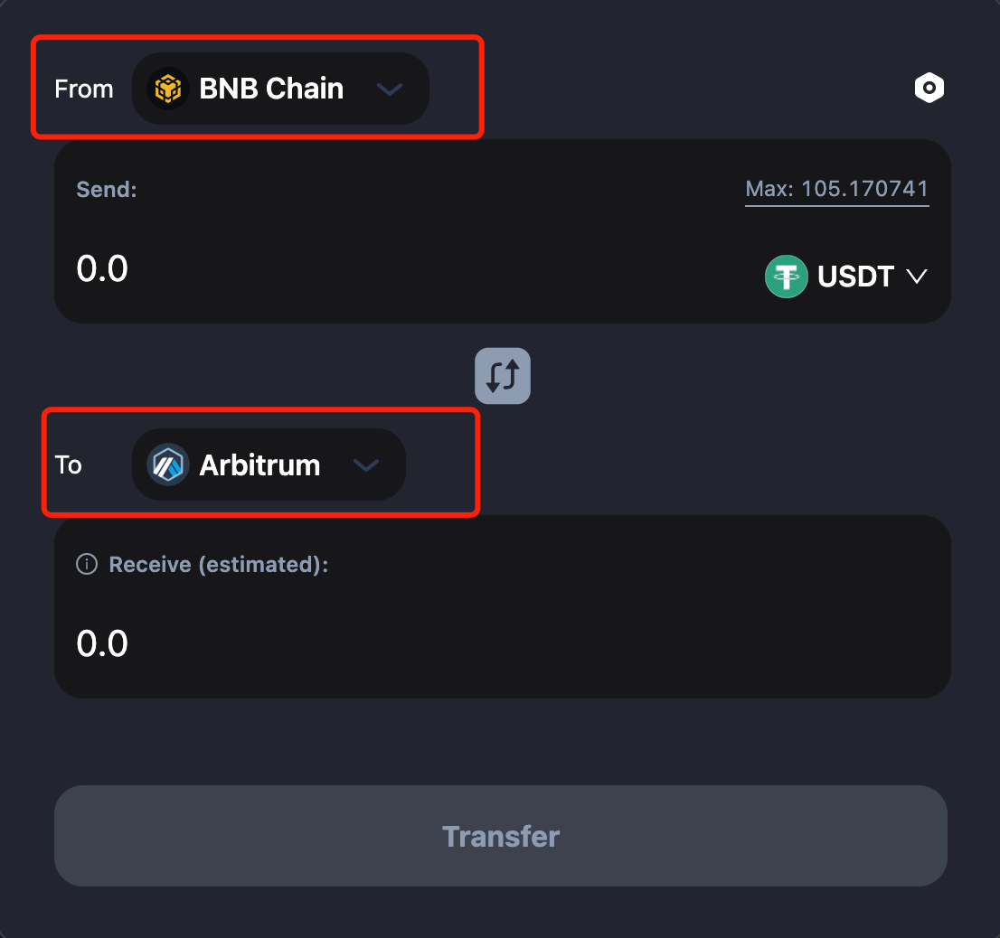
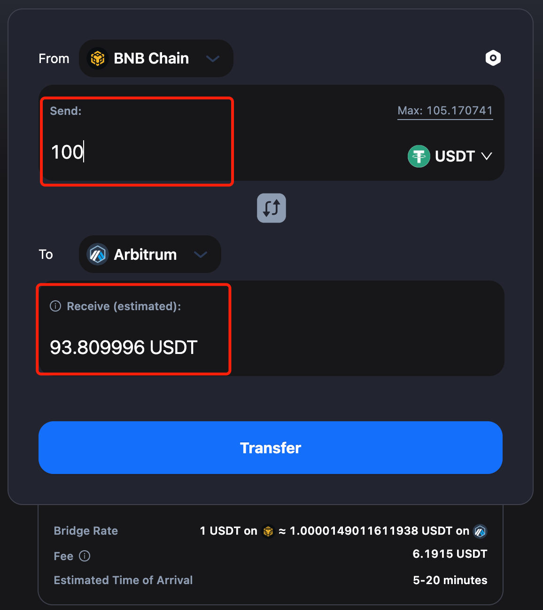
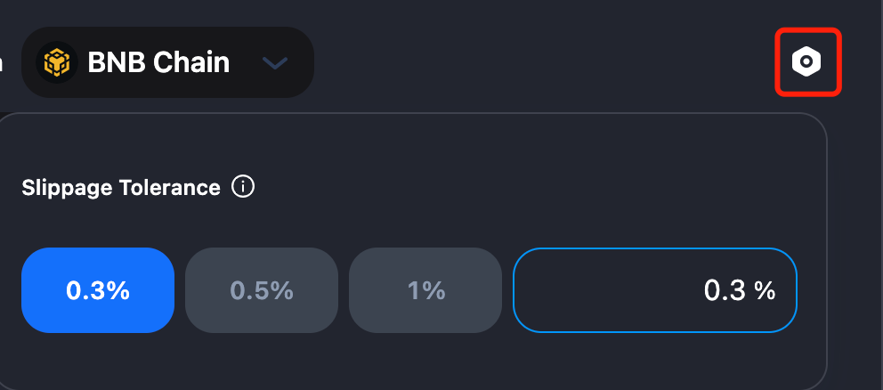
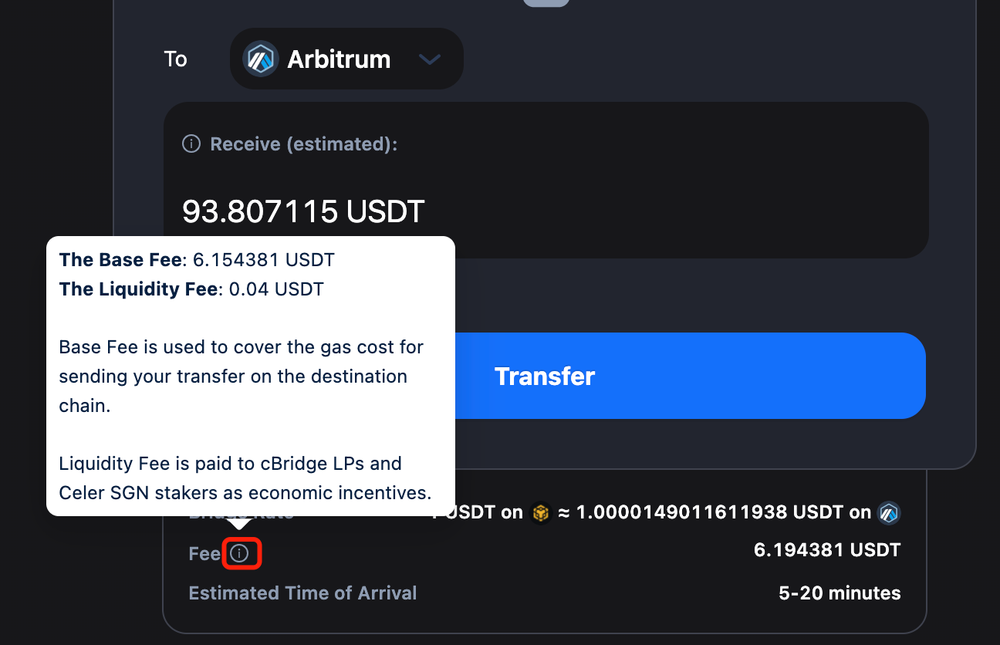
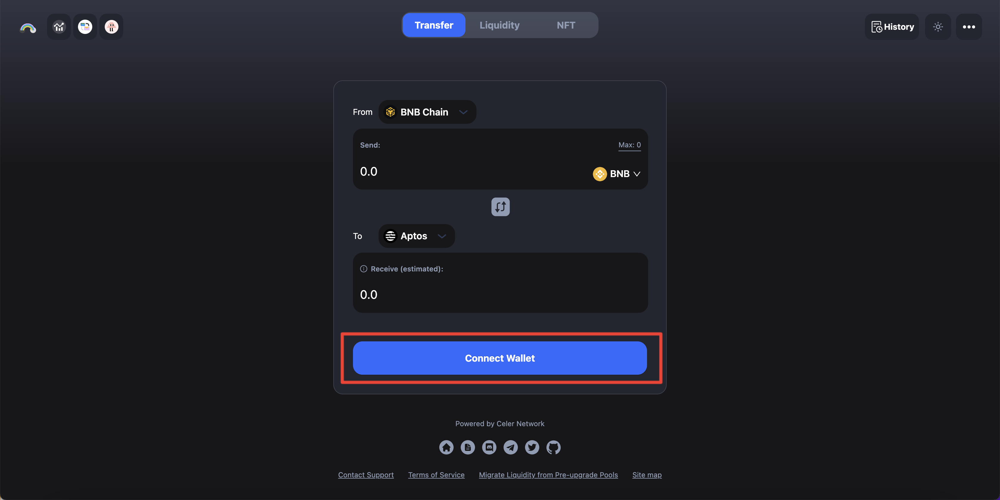
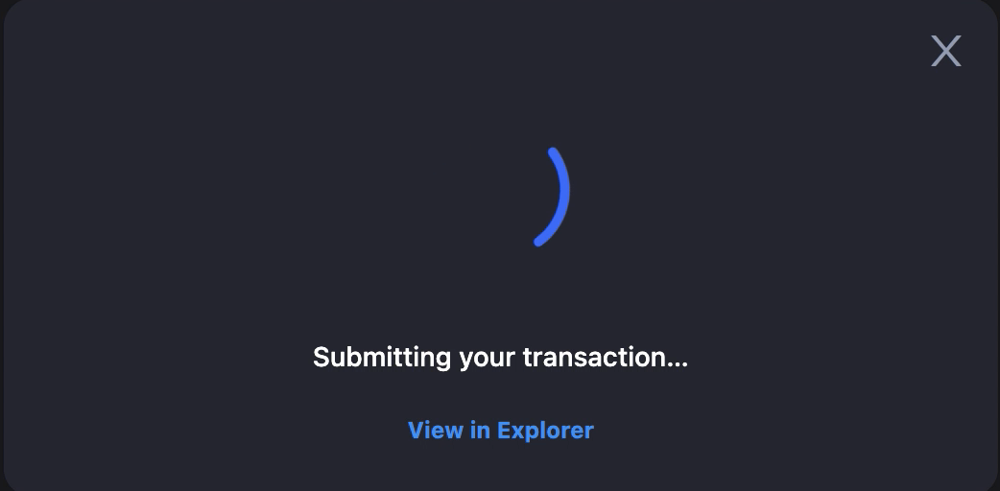
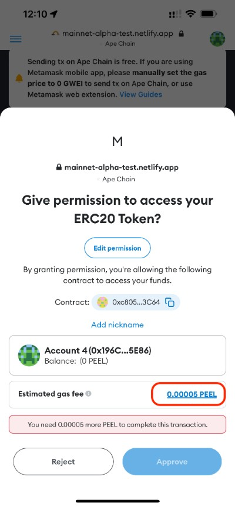
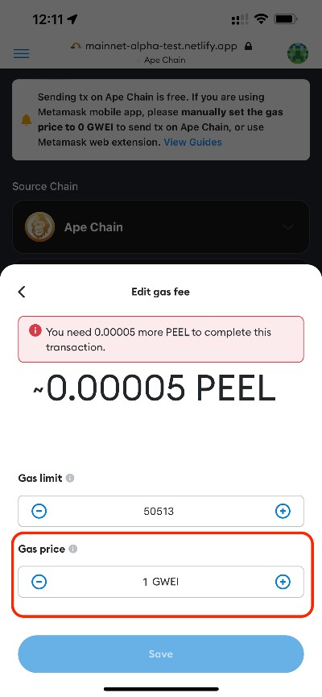
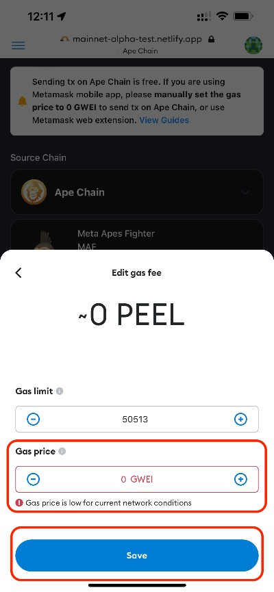
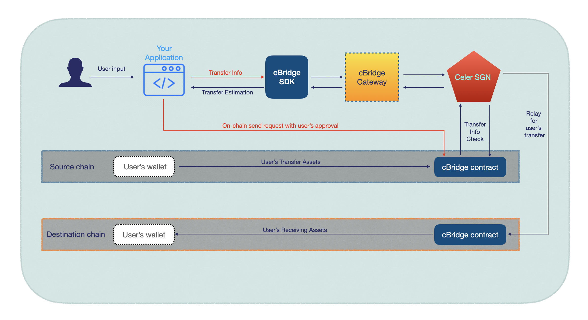

👋 Welcome to cBridge
.png)
cBridge introduces the best-in-class cross-chain token bridging experience with deep liquidity for users, highly efficient and easy-to-use liquidity management for both cBridge node operators and Liquidity Providers who do not want to operate cBridge nodes, and new exciting developer-oriented features such as general message bridging for cases like cross-chain DEX and NFTs. All of the above is made possible by extending the existing functionality and services provided by the Celer State Guardian Network (SGN) powered by validators and stakers in the system with value capture.
Architectural Benefits
A quick summary of improvements and additions brought by 2.0 architecture.
For users
- Deep liquidity: supports much larger transfer sizes.
- Simpler to use: offer an option to reduce two-step operations to a single click.
- Native gas token unwrapping: e.g. transfer WETH from BSC to unwrapped ETH on Arbitrum.
- Extend to even more tokens and chains
- Insured bridge node Service Level: did you initiate a transfer but the bridge node was not available? Slash cBridge node’s bond to cover your opportunity cost!
For LPs and cBridge node operators
- LPs don’t have to run a cBridge node: in cBridge 1.0, the only way to provide liquidity is to run a cBridge node. In 2.0, we added a second mode where the SGN itself acts as a “cBridge node.” For LPs satisfied with PoS-consensus-level security based on CELR token economics in the SGN, they can directly delegate liquidity to the network without operating a node themselves.
- Simple Liquidity Provider (LP) experience: No minting synthetic tokens, no volatile token pair AMM pool, no high impermanent loss, no complicated rebalancing. Simply add liquidity to the chain of your choice and start to earn fees!
- High liquidity efficiency: No double liquidity locking, fully utilize liquidity with the highest yield.
- Incentivized liquidity rebalance: lopsided liquidity movement? No worries! An AMM-style bonding curve and a flexible liquidity mining mechanism are in place to incentivize LPs and arbitrageurs to rebalance liquidity cross-chain.
- High Quality-of-Service node scheduling: For LPs operating self-custodial cBridge nodes, the SGN becomes the decentralized layer to allocate user transfer requests to different LPs through policies that incentivize high-quality service and competitive pricing.
Fo staker and validators participating in State Guardian Network
- Value capture: In return for their active services and roles in supporting cBridge 2.0, PoS stakers and validators in the SGN directly capture the value of cBridge via fees paid to the block producer facilitating user’s bridging request. This is very much like fee being paid for any PoS blockchain validators.
- Governance: Various system parameters including pricing curve, fee percentage, and more are governed through a decentralized governance process built in the active service SGN.
For developers:
- White-label frontend SDK: Allows multi-chain dApp to have a built-in cross-chain experience.
- Cross-chain messaging for NFT and more: Allows developers to build applications beyond simple cross-chain asset transfers, including cross-chain DEX and NFT cross-chain minting.
So, how do we achieve all of these cool improvements and innovations? What bridging design tradeoff space do we cover in the 2.0 architecture? At a high level, how exactly do all of these things work?
Answer: The State Guardian Network (SGN).
State Guardian Network
.png)
The Celer State Guardian Network (SGN) has been an essential part of Celer Network’s architecture. In Celer’s layer-2 scaling architecture, the SGN is a specialized Proof-of-Stake (PoS) chain that serves the purposes of monitoring L1 transactions related to L2 state and faithfully passing layer-2 information back to layer-1 when needed.
In the Celer State Channel, the SGN helps store channel states and respond to malicious settlements on L1 when needed. In the Celer layer2.finance rollup chain, the SGN extends as a decentralized block producer network to pass call data and state roots back to the L1 blockchain and submit fraud-proof from any SGN node even when the entire PoS consensus fails.
CELR holders can stake their tokens into the SGN by becoming a validator or through delegation and actively provide the above-mentioned services. SGN participants receive staking rewards as well as fees in exchange for the services they help provide.
SGN and cBridge
The SGN serves multiple roles in the cBridge 2.0 architecture:
- The SGN as a cBridge node gateway and Service Level Agreement (SLA) arbitrator
- The SGN as a Shared Liquidity Pool Manager
In the next two sections, we introduce the detailed utility of SGN in cBridge 2.0.
The SGN as a cBridge node gateway and Service Level Agreement (SLA) arbitrator
.png)
Design Choices and Limitations of 1.0
In cBridge 1.0, when a cBridge node joins the network, it registers to a gateway service with various information such as fee schedule and liquidity status. This gateway will continuously monitor the status and performance of the cBridge node. When a user request is made, it is directed to the gateway. The gateway evaluates the registered nodes based on liquidity availability, historical bridging success rate, fee, and more. Then it suggests the most suitable bridge node for the request. In 1.0, we chose to use a centralized gateway to quickly learn operation experiences on various scheduling policies.
Basically, what the 1.0 gateway provides to the user is really an “FYI” suggestion to use certain cBridge nodes. Although cBridge 1.0 is built with non-custodial architecture and users NEVER need to put trust in nodes for their fund’s security, there is indeed a user experience issue related to node availability. As an example, if after a user sends a conditional transfer to a node but the node goes offline before the two-step HTLC transfer is complete, they will have to wait until the conditional transfer times out, without any penalty to or compensation from this offline cBridge node.
We solve both of these limitations in 2.0 via the SGN.
Decentralized bridge node scheduling via the SGN
In 2.0, we first decentralized all of the gateway logic by migrating it as a service on top of the SGN. Instead of registering with a centralized gateway service, cBridge nodes will register with the SGN with their fee preference, availability of liquidity, and more.
When a user request is made, this is the “happy” system flow:
- The user queries the current state of the SGN to get an estimated transaction fee and liquidity availability.
- If the estimation is acceptable, the user sends the first half of the HTLC transfer with max fee tolerance specified.
- The SGN monitors and picks up the transaction. It assigns one or more registered cBridge nodes to the transaction based on node selection rules. This transaction assignment is written on the SGN chain and also marked on the user’s HTLC transfer.
- The assigned node picks up the assignment and responds by completing the rest of the conditional transfer.
- The SGN continues to monitor and track the transaction and once the transaction is successfully completed, the state related to this transaction is purged from the SGN chain.
This allows for a much more scalable cBridge node onboarding process with a consensus-based and unbiased node selection process. But we didn’t stop there.
Bridge node SLA bond and slashing mechanism
As opposed to 1.0’s gateway, the SGN-as-a-gateway architecture monitors the whole process of the cross-chain transaction. As a decentralized PoS chain, the SGN can now offer more than just a “friendly suggestion.” It can also enforce penalties to registered cBridge nodes that cannot complete transactions assigned to them “as promised.”
When a cBridge node registers with the SGN, it can put down an “SLA bond” (i.e. a bunch of tokens with value) associated with some SLA promises (e.g. availability, fee level, and liquidity reserve) in a pool contract. If the SGN determines that this node violates the SLA, such as being offline with an assigned transfer, the SGN can slash the bond as compensation to the user for the degraded user experience and liquidity opportunity cost. (remember, no fund loss for users is possible, this is just for “fund getting stuck” cost.)
During node selection, the value available in the SLA bond is a key factor in how the node is prioritized in the transfer assignment process. Honest and reliable cBridge nodes are heavily incentivized to invest in a reasonable SLA bond to increase their chances of getting selected in the bridging process. On the other hand, less reliable nodes will be driven out of the system or will only be called upon as a last option. Finally, cBridge nodes can only be de-registered with the SGN once there are no pending cross-chain transactions.
With the SLA bond slashing capability powered by the decentralized “SGN gateway,” the node availability challenge, and more generally, the SLA assurance concerns, are solved. This is aimed to facilitate a healthy, fast-growing, and decentralized cBridge node operator network for liquidity providers who want to maintain their self-custodial liquidity.
Some may argue that the SLA bond is not a 100% self-custodial setting due to the possibility of having the SLA bond wrongly slashed because of the possibility of a PoS consensus failure.
While this is true, we want to highlight that the SLA bond only needs to be a very tiny portion of the total liquidity in order to become highly efficient in ensuring a smooth user experience and a self-healing cBridge node operator ecosystem. This is a very worthwhile tradeoff to make and most importantly, the entire transfer process stays 100% non-custodial.
Node selection rule
The principle of the node selection rule design is to optimize for user experience. We build an empirical Node Quality Score formula to incorporate multiple factors such as the parameters in a node’s SLA (fee, response time) as well as historical performance. (e.g. success rate, average response time) When selecting nodes for user requests, we prioritize the nodes according to this score. We expect this formula to iterate and optimize over time with empirical operation experiences through protocol governance.
The SGN as a Shared Liquidity Pool Manager
\

Provide liquidity without running a cBridge node
The above improvements are designed more for self-custodial LPs who are capable of running their own cBridge nodes. However, we recognize that there are a large number of LPs and users who want to provide liquidity without running a cBridge node themselves and are satisfied with the security level provided by the SGN’s PoS consensus with CELR staking. In addition, through a shared liquidity pool model, the entire network liquidity can be easily bootstrapped to facilitate a much better user experience much faster.
So in cBridge 2.0, we are introducing an entirely new model of operation where the SGN manages shared liquidity pool contracts on multiple chains. This effectively treats the SGN and its managed liquidity pool as a single “node” along with all the other non-custodial LP-managed nodes and gives an option to the LPs to delegate liquidity easily without the hassle of running a node.
So, without any ambiguity, what security level does this model offer?
PoS-level security and decentralized governance
In cBridge 2.0, shared liquidity pool contracts are managed through the SGN’s PoS consensus. CELR staking weighted multi-signatures are needed to move funds in the pool contracts and malicious or faulty nodes will be slashed out of their staking token. It is only when nodes with more than ⅔ of the total stake are malicious, that the fund pool will be at risk. We want to stress that as the number of cBridge transactions grows and the total value captured by the network grows, it will be a naturally increasing economic deterrent for any node to try to behave maliciously.
The validator governance model in the SGN is open and decentralized: the SGN allows new validators to be elected and join the validator set through the staking governance process without any special coordination processes.
Simple Liquidity Provider (LP) experience and high liquidity efficiency
So how do LPs manage their liquidity in this model? Existing solutions require LPs to put canonical token liquidity along with another protocol-controlled settlement token in on-chain AMM pools. But this model has a few drawbacks:
- Some models require LPs to use a highly volatile settlement token and therefore inherently expose LPs to a significant impermanent loss.
- Even in the case of minting synthetic tokens through canonical liquidity tokens, LPs still suffer from complicated operational overhead when adding, removing, and rebalancing liquidity across multiple chains.
- In the case where “bonder” liquidity is required, the liquidity efficiency is lower because the liquidity requirement for any transfer is double what’s necessary.
cBridge 2.0 provides a simple LP experience and high liquidity efficiency through a new design to solve the “liquidity attribution problem.” To understand our system design, we will first explain what “liquidity attribution” means. In any multi-chain bridging system, when a user sends funds from a source chain to a destination chain, LP(s) (or aggregated pools) essentially pay funds to the user on the destination chain while receiving funds from the user on the source chain. Now, let’s say there is an LP providing liquidity to the system on chain A. When a user sends funds from chain B to chain A, the LP’s liquidity essentially is “redistributed”: their liquidity on chain A is reduced and their liquidity on chain B is increased. The liquidity attribution problem is defined as “how does the system allow every LP to know where all of their liquidity is?” and hence how to effectively manage the liquidity to optimize for transaction fee yield.
An AMM pool-based solution tracks LPs liquidity implicitly via the distribution of settlement tokens and canonical tokens in the AMM pool. The bridging fabric (e.g. TSS validators or L2-to-L1 messaging protocols) only manages the minting and burning of the settlement tokens cross-chain. The user will always need to pay for an AMM swap from the settlement token to the canonical token on the destination chain; sometimes even on the source chain as well. When a lopsided liquidity movement happens in the network, it makes sense to move liquidity from the liquidity-abundant chain to the liquidity-scarce chain to arbitrage the slippage. Arbitragers will have an incentive to rebalance the liquidity by sending funds from the liquidity-scarce chain to the liquidity-abundant chain.
Active LPs have stronger incentives due to that they don’t need to pay additional bridging fees to harvest the arbitrage gain. However, the rebalancing process for LP is quite complicated. As an example, if we denote the liquidity-scarce chain as S and liquidity-abundant chain as A, an LP would need to take the following steps:
- Remove liquidity from the AMM pool in S.
- Move the settlement token from S to A.
- Sell the settlement token to the canonical token on A at a premium
- Move the canonical token back to S.
- Purchase the settlement token on S.
- Add liquidity back into the AMM pool on S.
The above steps not only cause operational overhead but can also incur significant transaction and time costs. (e.g. in the case of the bonder model)
In cBridge 2.0, we argue that the bridging fabric (in our case the SGN) is specialized and can be highly optimized to have fundamentally lower costs when compared to on-chain smart contract operations. Therefore, in the cBridge 2.0, every LP’s liquidity in the system is explicitly tracked. Adding liquidity is super simple: just one transaction to add the canonical token into the liquidity pool contract and the SGN will record each LP’s liquidity amount in the SGN’s chain state. In essence, the SGN maintains a table of (chain_id, LP_address, token_type, balance) in its chain states.
When processing cross-chain transfer requests, the SGN will use the entire pool’s liquidity to calculate the slippage and pricing. (more on this in the next section) The SGN then treats LPs as “virtual cBridge nodes” and allocates the transfer request against the LP’s liquidity. A simplified conceptual understanding is that, for every transfer request, every destination chain’s LP’s balance is reduced proportionally to their available liquidity while their liquidity balance is increased on the source chain. Of course, various methods including random sampling and approximation algorithms are used to minimize state changes and hence costs, all while maintaining statistical fairness among LPs. More details are in our technical documentation.
The same arbitrager-based rebalance incentives applies, but this design additionally gives LPs the utmost flexibility when managing their liquidity. Every LP can clearly see exactly how their liquidity is distributed at any given time. This allows them to be fully informed when choosing to remove or add liquidity to any chains. This significantly simplifies the liquidity rebalancing process from 6 steps to 3 steps with no AMM swap costs:
- The LP removes liquidity from A directly in canonical tokens. Due to system-wide pricing difference, with this first step, the LP locks in the arbitrage gain.
- The LP moves the canonical tokens from A to S.
- The LP adds the canonical tokens on pools in S.
It is still possible for LPs to remove all liquidity from a single chain or any combination of specific chains. In cBridge 2.0, the way to do this is to trigger an internal cross-chain transfer and treat the LP as a user and transfer their liquidity to the desired chains and then remove the liquidity. Note that in this case, the LP will shoulder the system slippage for the cross-chain transfer. However, this is no different than directly swapping settlement tokens for the on-chain AMM-based solutions and in fact, has a lower cost.
What’s more, as described in this model, LPs use canonical token liquidity directly and therefore do not suffer from high impermanent loss. Plus, it provides the highest level of liquidity efficiency without any additional bonder liquidity lockup requirement.
Cross-chain bridge pricing to incentive balanced liquidity
In a cross-chain bridging system, liquidity for the same canonical token exists on multiple chains. As the demand for the same canonical token shifts for different chains, the inherent pricing between the same token on different chains also dynamically changes. This is based on the underlying costs to use those native bridges to move across different chains and the supply-demand balance of liquidity on those different chains.
It is very important for any bridging solution to be able to capture this inherent pricing shift with a properly designed bonding curve. This creates important incentives for LPs to leverage the “economies of scale” and rebalance liquidity across multiple chains to maintain a network with sufficient and balanced liquidity to process all of the user requests.
Continuing with our design principle of having an “intelligent fabric,” we build a Curve-inspired bonding curve pricing mechanism inside the SGN. When a user transfers tokens from one chain to another, the SGN will calculate the received token based on the available liquidity on the source and destination chains. In addition to the slippage and pricing, a flat fee is deducted from the transaction as payment to LPs.
Specifically, for any pair of chains, i and j, let xiand xjbe the balance on-chain i and chain j for a given token, respectively. Then the following invariant should always hold true when we calculate the pricing and slippage of token transfers between chain i and chain j:

- A is a per-chain-pair constant. For the same chain pair, A is the same for all tokens.
- D is a variable. The initial D can be obtained by solving a cubic equation against D given the initial liquidity on the two chains. After that, D should be iteratively updated based on liquidity status.
- wi and wj are the relative weights for the two chains, which is used to control the pricing asymmetry for the transfers. Note that the configuration of weights is per-chain-pair and should satisfy wi+wj=2.
The reason we have these weight parameters in the bonding curve is to capture the inherent asymmetry of certain chains. For example, transferring into optimistic rollups, such as Arbitrum and Optimism, is much simpler and lower cost than the 7-day delay of transferring out. Therefore, we can control the weight in the bonding curve to reflect this inherent difference created by each and every chain.

In the above red asymmetric curve with the blue symmetric reference line, we can see the curve creates more slippage for transfers from chain i to chain j when the imbalance happens. If wi=1, wj=1, it reduces to the Curve invariant.
It is also possible to treat an entire network of similar canonical liquidity as a single multi-variable bonding surface. More analysis is needed on the effects of these two different potential designs in terms of slippage effectiveness and cost of operation.
General cross-chain messaging
cBridge 2.0 creates an intelligent cross-chain fabric based on the SGN. This fabric can do more than just cross-chain asset transfers. Under the asset bridging functionality is actually a general cross-chain messaging framework where the SGN monitors certain events on the source chain and posts a PoS consensus secured notarization on the destination chain.
We will be gradually opening up this underlying functionality to developers as an SDK to build use cases for not only on-chain bridging, but for other use cases like cross-chain NFT, cross-chain DeFi aggregation, and more.
Fungible Token Bridging Models
Celer cBridge supports two fungible token bridging models:
-
xAsset, the canonical mapping bridge: This model is intended for a token that needs to be bridged from its original source chain, chain A, to a new chain, chain B, when it has not yet been deployed on chain B. Celer cBridge will create a mapped version of the token on chain B via a lock-and-mint model.
When a user transfers the token from chain A to chain B, the original tokens will be locked on chain A and an equal number of tokens will be minted in a 1:1 pegged ratio and sent to the user on chain B. Reversely, when a user transfers tokens from chain B to chain A, the pegged tokens will be burned on chain B and an equal number of tokens will be sent back to the user on chain A.
Please Note: In xAsset v2, in addition to bridging between the original source chain and the specific canonically mapped destination chain, tokens can also be bridged between different canonical mapping chains in a mint-and-burn method without routing back to the original chain. This way there is only one copy of the canonically mapped token on all of the supported canonical mapping chains.\ -
xLiquidity, the pool-based bridge. This model is intended for a token that has been deployed on different chains and does not conform to the cBridge standard. Liquidity pools will be created on the various chains to support bridging. When users transfer between these chains they will be depositing their tokens into the pool on the source chain and withdrawing a matching number of tokens from the pool on the destination chain based on a bridge rate generated by the StableSwap pricing curve.
xAsset Architecture
Suppose token T has been deployed on chain A but not yet on chain B. If bridging is needed for the token T between chain A and chain B, then two contracts need to be deployed:
- TokenVault contract. This contract is deployed on chain A. The user can deposit token T into this vault and receive pegged tokens on chain B, or withdraw token T from the vault if pegged tokens are burned on chain B.
- PeggedToken contract which mints or burns the pegged tokens on chain B.
Transfer from chain A to chain B (Lock-and-Mint Flow)
The below figure illustrates the steps for bridging token T from chain A to chain B.
- User deposits X number of token T to the TokenVault contract on chain A.
- The Celer State Guardian Network (SGN) monitors the deposit event. Upon receiving the deposit event, the SGN generates a multisig that grants minting X pegged tokens on chain B.
- The relayer fetches the SGN’s multisig.
- On chain B, the relayer calls the PeggedToken contract with the multisig.
- The PeggedToken contract mints X tokens to the user on chain B.

Transfer from chain B to chain A (Burn-and-Release Flow)
The below figure illustrates the steps for bridging the pegged tokens from chain B back to chain A.
- User calls PeggedToken contract to burn X pegged tokens on chain B.
- The Celer SGN monitors the burn event. Upon receiving the burn event, the SGN generates a multisig that grants the withdrawal from the TokenVault contract on chain A.
- The relayer fetches the SGN’s multisig.
- On chain A, the relayer calls the TokenVault contract with the multisig.
- The TokenVault contract sends back X number of token T to the user.

xAsset Fee Structure
The fee for a token bridged in the xAsset model is calculated as such:
Fee = Base Fee + Protocol Fee
The Base Fee is paid in the form of the tokens being transferred, and covers the destination-chain gas cost for sending the tokens to the user.
The Protocol Fee is proportional to the transfer amount, and is paid to State Guardian Network (SGN) validators and stakers in return for their services. The Protocol Fee ranges from 0% to 0.5% of the total transfer amount.
xLiquidity Fee Structure
The fee for a token bridged in the xLiquidity model is calculated as:
Fee = Base Fee + Protocol Fee
The Base Fee is paid in the form of the tokens being transferred, and covers the destination-chain gas cost for sending the tokens to the user.
The Protocol Fee is proportional to the transfer amount (after a bridge rate conversion), and is paid to cBridge liquidity providers and State Guardian Network (SGN) validators and stakers in return for their services. The Protocol Fee ranges from 0% to 0.5% of the total transfer amount.
cBridge Security
We’ve seen time and again news headlines about how different cross-chain bridges have been compromised and hacked, so it is important for our community, users, and developers to have a clear understanding of the security models of the Celer Inter-chain Message Framework (Celer IM). Different from existing interoperability solutions, Celer has two different security models, an optimistic-rollup inspired model and a L1-PoS-blockchain security model. Each of these comes with different delay and security assumptions tradeoffs that developers and users can freely choose from or set. The security model is highly flexible and even for a single application, developers can choose to build a hybrid model based on the “value” or “significance” of every cross-chain message.
In fact, Celer cBridge, an asset bridge built on top of Celer IM, supports a hybrid model so that the various tradeoffs can be dynamically chosen by the connecting chain based on the cross-chain transfer amount, token and source/destination chain.
Quick Recap of How Celer Inter-chain Message Works

Celer Network consists of smart contracts that are deployed on each chain. These contracts are all monitored and operated by the State Guardian Network (SGN), which serves as the “cross-chain message router”. The SGN is implemented as a Cosmos-based blockchain with $CELR PoS staking from a set of distributed validators. To send a message, bridge an asset, or invoke smart contract calls cross-chain, a user or a dApp will first send their intention as a message with a structured header and binary payload to a Message Bus smart contract on the source chain. Then the validators in the State Guardian Network blockchain, will monitor these events containing messages and first reach a consensus on the existence of such a message through the Cosmos consensus protocol and concurrently generate a stake-weighed multi-signature attestation. This attestation is then relayed to the destination via an Executor subscribing to the message. On the destination chain, the same Message Bus contract exists to check the validity of the message and triggers the corresponding logic associated with the message either immediately or after an Optimistic-rollup-style timeout. For a more detailed explanation with a step-by-step example walkthrough, please refer to this Celer IM documentation and the Celer IM introduction blog.
Blockchain-level Security Powered by Cosmos Consensus

By default, inter-chain dApps rely on the security of the State Guardian Network (a Cosmos Chain) to process messages routed from another chain without delay. The SGN offers L1-blockchain level security just like Cosmos or Polygon with it being a Proof-of-Stake (PoS) blockchain built on Tendermint with CELR as the staking asset. If one minority guardian acts maliciously, its staked CELR will be slashed by the consensus protocol and the offending guardian will be evicted from the validator group. There are also block rewards, to act as economic incentives, when the participating guardians follow the protocol.
This level of economic security grows with the staked CELR’s value and is simply not available in simple Multi-signature or MPC/PoA-based solutions. In MPC/PoA-based solutions, there is really no economic recourse or punishment built into the protocol for validators that act maliciously.
This security model is the most “lightweight” option, because it offers the best user experience with the lowest level of latency and cost to the users. There are numerous PoS blockchains using the exact same consensus protocol that the Celer SGN uses and are securing hundreds of billions in assets. Therefore, in most cases, this default security model is recommended.
Optimistic-rollup-style Security Model

So, what happens if more than two thirds (in staked value) of the validators behave maliciously in the State Guardian Network? Although this is highly unlikely given the economical security and distributed nature of the validators in Celer Network, Celer does have a second security model, inspired by the Optimistic Rollup design, that works securely even under this worst-case scenario.
Instead of instantly processing a message routed by the SGN, a two-phase commit-confirm pattern is used to process any inter-chain message. Before any application consumes the message, the message has to be “committed” to the blockchain by SGN into a “quarantine zone” for a period of time. Only after the delay has passed, can this message be “confirmed” and pushed to the final destination application.
During this delay buffer, a dApp can run an App Guardian service to double-validate the message on the source chain and check the authenticity of the message committed in the quarantine zone. If the App Guardian detects any inconsistency, it can prevent the message from being processed before the time buffer expires. For application developers who cannot run an App Guardian themselves, they can commission the SGN nodes to undertake the task of an App Guardian. In that case, the security model is strengthened to a trust-any model for the SGN. Therefore, even under the worst-case scenario of the SGN consensus failure, inter-chain dApps built on top of Celer’s construct will still maintain safety property without any concern.
Hybrid Model is Available
dApp developers and blockchains can choose to mix-match the above two models based on the “value” or “significance” of certain transactions. In fact, Celer cBridge, built on top of Celer IM, already has this hybrid model built-in based on the amount of transfer. We will also release sample applications where developers can trigger Celer IM in the optimistic-rollup-style security model based on different message types.
Other Considerations on Implementation
Except for the above architecture design to fundamentally enhance security, it is also very important to have implementation and operational best practices to ensure a safe operation of the asset bridge. These considerations includes 24*7 automated system invariant monitoring, rate limiting on bridging volume and more.
Smart contract audits
Celer cBridge has been extensively audited.
Open-source code: https://github.com/celer-network/sgn-v2-contracts/
CertiK reports: liquidity bridge
PeckShield Report: liquidity bridge, canonical bridge
SlowMist Report: liquidity bridge, canonical bridge
$2M Bug Bounty
In addition to the security audits, Celer cBridge has a standing $2M bug bounty in ImmuneFi
Cross-chain Transfer
In this tutorial, we will guide you through the process for making a cross-chain transfer.
Connect Your Wallet
Before you explore the different features offered by cBridge, you will need to connect your wallet.
Click “Connect Wallet”, and you will be prompted to select a wallet. (This tutorial will take MetaMask as an example).

.png)
Select MetaMask, and you should now see your wallet address and your current chain in the top right corner of the page.
 (1).png)

Transfer Tokens Across Chains
Let’s say, you want to transfer 100 USDT from the BNB Chain to Arbitrum. The steps are made simple in cBridge:
- Select “BNB Chain” in the dropbox next to “From” and “Arbitrum” in the dropbox next to “To”.

You will be prompted to switch your wallet to BNB Chain if it’s not already connected.

2. Enter the amount you want to send under “Send”. You should see the estimated amount you will receive under “Receive（estimated)”.

3. You can adjust the Slippage Tolerance of the transfer. Your transfer may fail with a very low Slippage Tolerance. It’s usually between 0.1% and 0.5%.

Note that there will be a difference between the amount you send and the amount you receive, which is determined by the Bridge Rate and fees. For the exact definition of each item in the transaction, check the tooltips next to each of the terms.

4. Review your transfer details and click “Transfer” You will receive a popup for USDT approval.


Click “Approve” and you will be prompted with a USDT spend confirmation on MetaMask. Click “Confirm”, and your “Approve” transaction will be finalized in a few minutes.
.png)
5. After USDT is approved, you will be prompted on cBridge to confirm the cross-chain transfer. Review the transfer details and click “Confirm Transfer”. You will be prompted to confirm the transaction on MetaMask. Click “Confirm”.


6. After confirming on MetaMask, you will receive a Transfer Submitted popup.

You can also check the transaction status in “Pending” in the top right corner of the page.

7. It takes some extra time for the funds to arrive at your wallet on the destination chain. On MetaMask, you can switch to the destination chain, which in our case is Arbitrum, to check if you have received the funds.
Alternatively, you can also view your transaction status via the BNB Smart Chain Explorer, which can be accessed via a link in your transaction history.


8. In cases where your transfer fails due to insufficient liquidity on the destination chain or an unfavorable slippage tolerance, you will receive a popup explaining the reason for the failure. You can click “Request Refund” in the transfer history.
And voila! Congratulations on completing your first cross-chain transfer on cBridge !
LP Guide
In this LP Guide part, we will walk you through 2 main features: Provide Liquidity and remove Liquidity.
Note: In the current version, using a smart contract to remove liquidity is not supported on the frontend UI. Unless you are an expert, PLEASE DON’T USE smart contract wallet to provide liquidity. For expert, please refer to this section.
Provide Liquidity
Let’s say, you want to supply liquidity for USDT on BNB Chain to earn transaction fees and farming rewards. The steps are simple.
1. First, click the “+” button on the liquidity pool of your interest. Switch your wallet to the network you want to provide liquidity for.

2. On the popup prompted, enter the amount you want to supply to the pool. Click “Add Liquidity”.
Note that your liquidity may be moved to other chains as users make cross-chain transfers with your supplied liquidity. There might also be Impermanent Loss if there is a significant liquidity imbalance between chains. We always recommend adding liquidity to balance out multiple pools while you earn fees and rewards.

3. You will then be prompted to confirm the transaction on MetaMask. Click “Confirm”.

4. After confirming on MetaMask, the transaction status will update on cBridge and show you the progress of the transaction. The transaction will first be validated on the blockchain, and then by the Celer SGN (State Guardian Network).

5. While the transaction is being confirmed, you can close the popup. You can check the transaction status in “Pending” on the top right corner of the page.

6. When the transaction is complete, you can check your liquidity summary, positions, earnings and rewards in “Your Liquidity Overview”.

Earn Transaction Fees & Farming Rewards
Note: Screenshots used in this tutorial are from cBridge testnet.
Supplying liquidity in cBridge comes with the benefits of liquidity fee earnings and farming rewards.
When you supply liquidity, you earn a percentage of the transaction fees from people who use your liquidity to bridge funds across chains, and your liquidity fee earnings are automatically added to your total liquidity.

Some liquidity pools may have active farming sessions, where you gain additional farming rewards in CELR along with your liquidity fee earnings. Farming rewards need to be claimed manually.
1. To claim farming rewards, click “View”, and then “Unlock to claim”.


2. You will then see a popup showing the unlocking progress.

3. Once rewards are unlocked, you will see a popup update asking if you want to claim farming rewards at the moment. Clicking “Claim Farming Rewards” will prompt you to confirm the transaction on MetaMask.


4. When the transaction is complete, a “Success” popup update will show up on cBridge.

5. Alternatively, you can choose to wait for your farming rewards to accumulate and claim them later. You can always go to “Your Total Farming Rewards” to check your reward positions and claim rewards.
6. All your farming rewards are accumulated in one single pool, so there is no need to switch between multiple chains to claim your rewards.
Remove Liquidity
You can easily remove your liquidity from the SGN at any time.
- To remove your liquidity, click the “-” button on the Liquidity interface.

2. Choose the percentage of liquidity you wish to remove with the slider bar, or enter a specific percentage.

3. Review your liquidity removal details, such as “Amount to Remove”. Click “Remove Liquidity”, and you will be prompted with a confirmation popup. Click “Continue”.

4. You will be prompted to sign the transaction on MetaMask. Click “Sign”.

5. You will then receive a popup update on cBridge, showing you the status of the removal.

6. Once the removal is confirmed by the Celer SGN, you will be prompted to confirm the removal. Click “Confirm Remove Liquidity”.

7. You will be prompted to confirm the transaction on MetaMask. Click “Confirm”.

8. You will receive a “Success” popup on cBridge.

9. Note that it may take a few minutes for the transaction to complete. You can go to “History” -> “Liquidity History” to check the status of the transaction.

SGN V2 Staking Guide
Staking your CELR with the Celer SGN allows you to gain transaction fee earnings and staking rewards. In this part, we will guide you through the process of delegating stakes to validators, withdrawing your stakes from the SGN, and managing your SGN rewards.
Delegate Stakes to Validators
- First, connect your wallet to the Celer SGN and then switch to Ethereum Mainnet.
.png)
2. Click the “Delegate” button to choose a validator of your interest to delegate your CELR stakes to.
.png)
3. Enter the amount of CELR you want to stake and click “Give permission to stake your CELR”. You will be prompted to confirm the transaction on MetaMask and click “Confirm”.

4. After granting permission, click “Delegate” to approve.
.png)
5. You will then receive a “Delegation Completed” popup. Congratulations, you have completed the staking. Note that it may take some time for your staking rewards to show in “My Rewards”.

6.You can check the delegation details by clicking the expand button next to “Details”.
.png)
Manage SGN Rewards
On the “My Rewards” page, you will see two benefits that come with staking: Staking Rewards and cBridge Transaction Fee Earnings.
Claim Staking Rewards
- You need to first unlock your staking rewards to claim them. Click “Unlock to claim.”
.png)
2. You will see a popup showing the unlocking progress.

3. Once rewards are unlocked, you will see a popup update asking if you want to claim rewards at the moment. Click “Claim” will prompt you to confirm the transaction on MetaMask.

4. Or you can click “claim” in “My Rewards” later and claim your rewards after confirmation by MetaMask.

5. Click the “Claim” button, and a confirmation popup will show up. Click “Claim” on the popup. You will be prompted to confirm the transaction on MetaMask. Confirm in Metamask.

6. You can view status updates on SGN. It takes a few minutes for the transaction to complete on Ethereum, and you can always go to Etherscan to check the status of the transaction.

Claim Transaction Fees from cBridge
When you stake CELR on SGN, in addition to staking rewards, you can also get cross-chain transaction fee earnings from cBridge.
Celer cBridge cross-chain transaction fee earnings come from three sources, the Celer Inter-chain Messaging framework, the open canonical token bridge standard and the pool-based bridge model.
.png)
1. To claim your transaction fee earnings, go to the “My Rewards” page, click “Claim Fee Rewards pool-based bridge” next to “cBridge Transaction Fee”, and a popup will appear to show you the rewards you can claim on different chains.
2.To claim fee rewards on a single chain, click “Claim” next to a single chain.
Withdraw Your Stakes From SGN
To withdraw your stakes, you need to first unbond your stakes from the delegator, and wait for a 7-day unbonding process. Once stakes are unbonded, they can be withdrawn.
Unbond Your Stakes
- To unbond your stakes from a validator, go to “My Rewards” -> “My Delegations”, and click the “unbond” button.
.png)
Alternatively, you can go to “All Validators”, and expand on the validator to find the “unbond” button.
.png)
2. On the popup that shows up, enter the amount you want to withdraw. You will be prompted to confirm the transaction on MetaMask. Click “Confirm”.
.png)
3. After confirming, you will then receive an “Unbond in Progress” popup, which tells you when your stakes will become withdrawable.
.png)
4. Now you can see the amount of the stake being released in My Delegations.

5. The unbonding process takes 7 days, after which your stakes will be moved to “Your Withdrawable Stakes”.
Withdraw Your Stakes
- Click “Withdraw”.

2. You will be prompted to confirm the transaction on MetaMask. Click “Confirm”.


3. It may take a few minutes for the transaction to complete. Once completed, you can check in Metamask if you have received the fund.

SGN V1 Unbonding Guide
Withdraw Your Stakes From SGN V1
To withdraw your stakes, you need to first unbond your stakes from the delegator. The unbonding confirmation takes no time. Once stakes are unbonded, they can be withdrawn.
Unbond Your Stakes
- To unbond your stakes from a validator, go to “Validators”, find the address you delegated to and click on it.

2. On the delegator page, click on the top right “Initialize Withdraw” button.\

3. On the pop-up, enter the amount you want to withdraw. For v1->v2 migration, make sure you enter the full amount you staked into this delegator. Review the amount and click OK.\

4. On the MetaMask popup, click “Confirm”.

Withdraw Your Stakes
- Once the transaction is confirmed on MetaMask, go back to the validator page and click the top-right “Confirm Withdraw” button.\

2. On the MetaMask popup, click “Confirm”. It may take a few minutes for the transaction to complete. Once completed, you can check in Metamask if you have received the fund.

Withdraw Your Rewards From SGN V1
Claim Staking Rewards
To claim your staking rewards, go to “Reward”, and click the “Initialize Redeem” button.\

Redeem Staking Rewards
- After SGN completes collecting signature, click “Redeem Reward”.\

2. On the Metamask popup, click on “Confirm”, and your rewards should be sent to your address in a few minutes.
Smart Contract as LP
The liquidity pool mode of cBridge supports using a smart contract (eg. a multi-sig wallet) to provide liquidity, with the caveat of having to follow a special process to withdraw liquidity. This tutorial describes the process of adding and withdrawing liquidity using smart contracts.
Note: This feature has only been released on a limited number of chains.
Note: Before adding any liquidity to cBridge from a smart contract, make sure you have read this tutorial and are comfortable with following the technical instructions.
Prerequisite: Check LP address
Currently, we have only released support for contract LPs on a limited number of chains on which we have deployed WithdrawInbox contracts to facilitate withdrawing liquidity:
- Ethereum: 0xD20fc42E293734f58316E2106933B8D9FB14F5b2
- BSC: 0xf0FF9888A70f44eb12223A6a55C65976BA7bf854
- Optimism: 0x1b6a49B01176020b153d0cD5Bc90Ef2b75676F00
- Polygon: 0x0E6847e732c0dfE40cc15216AC95E558960e522e
- Avalanche: 0x03ab38cF52173CC71be33B0D2779568f412Be828
- Arbitrum: 0xfe0401bFFBeECE5d9FaE7f1b9a8f1e03FA1c3184
- Conflux: 0x78a21c1d3ed53a82d4247b9ee5bf001f4620ceec
- Kava: 0x0D90AC8466C3aEF6821f9116B96aa2255Ca2DA20
- zkSync Era: 0x80Bd61013F1ca7908b75d88AD08f8dBdEab4e779
- Moonbeam: 0x9B36f165baB9ebe611d491180418d8De4b8f3a1f
- Manta Pacific: 0xF9eBA2FE3F8d03d098a439fab2038c737D3DBB94
- Base: 0xAeC3b47eda9040b9C12F2Ac8d6980d2D2Bcc99F5
Make sure the chain you are going to interact with is supported. Take a note of the WithdrawInbox address and cBridge address.
In cBridge, all LPs are identified by their address regardless of the chain they use. Technically, it is possible for two different entities to occupy the same address but on different chains. For security purposes, a contract LP is only allowed to submit withdraw requests to the WithdrawInbox on the first chain on which they added liquidity. Note that this only restricts on which chain you can submit the withdraw request and it does not affect where the withdrawn liquidity comes from. For example, if you first added liquidity on Ethereum, then you need to submit the withdraw request to the WithdrawInbox on Ethereum. Within the request, you are still free to withdraw liquidity from BSC to Optimism.
To make sure your intended LP address is not occupied by someone else and to check which chain you can submit the withdraw request on, execute the following command:
curl -X GET 'https://cbridge-prod2.celer.app/v1/getLPOrigin?usr_addr=<your contract address>'
A response with a chain_idof 0 means that no LP with the given address has added liquidity. Since the address is not registered with the system, there is also no chain where you can submit a withdraw request yet, and you can proceed to Add Liquidity with confidence. A non-zero chain-id requires you to confirm that you have control of the address on the returned chain_id. If not, it means the address has been occupied by someone else and you need to use a different address.
NOTE: If you added liquidity via a smart contract / multi-sig wallet before we added support for withdrawal on a particular chain and receive a 0 response from the command above, please add liquidity again with a small value from the same contract to register it with the system. Only then will you be able to withdraw your previously added liquidity.
Contract Preparation
Skip this step if you are using generic multi-sig wallets such as Gnosis Safe.
For custom contracts, you need to make sure they can interact with the liquidity Pool and the WithdrawInbox contracts. Specifically, it needs to interact with the required Pool and WithdrawInbox interfaces.
Here is an example of a smart contract LP.
Add Liquidity
Adding liquidity from contracts is relatively simple. Just call addLiquidity on the cBridge contract.
Query Liquidity
You can query the liquidity by:
curl -X GET 'https://cbridge-prod2.celer.app/v1/getLPInfoList?addr=<your contract address>'
Look for the liquidity_amt fields.
Send Withdrawal Request
From your contract, call the withdraw function of WithdrawInbox.
Some explanations of the parameters:
_wdSeqis a unique identifier for each withdrawal._receiveris the receiver address on_toChain._toChainis the chain ID to receive the tokens withdrawn._fromChainsare a list of chain IDs to withdraw the tokens from. We support cross-chain withdrawals, that is to withdraw the liquidity from multiple chains to a single chain._tokensare the token addresses on each chain. Make sure they refer to the same token symbol and they are supported by cBridge on all the chains involved._ratiosare the percentages of liquidity to be withdrawn from each chain. They should be all positive. The max ratio is 100000000, which means 100%._slippagesare the maximal allowed slippages for cross-chain withdrawals. Usually a small number such as 5000, which means 0.5%, should suffice. The max slippage is 1000000, which means 100%.
Query Withdrawal Request
After the transaction has been confirmed for some period of time. Use the command below to query your withdrawal request, replace <_wdSeq>, <_receiver> and <_toChain> with the input parameters when you submitted the withdrawal request to WithdrawInbox. Leave type as 2 and tx_hash empty.
curl -X GET 'https://cbridge-prod2.celer.app/v1/queryLiquidityStatus?seq_num=<_wdSeq>&lp_addr=<_receiver>&chain_id=<_toChain>&type=2&tx_hash='
Here is an example response:
{
"err": null,
"status": 2,
"wd_onchain": "CGEQzN8EGhS1u4t/bxiD4MAf+4aXAkUy5vMjjCIUfUOqvFFcNWFFBJInzuVLYINCwK0qBDWfasA=",
"sorted_sigs": [
"RWOqYnYjJ7RicK+10sUJQw2N8RqD8okx7Fm0CVAxsGQCjvQzECG/5RuEvVj2DuMABqeqNutwNzQi/507NLTgchw=",
"gT7QzODxY2jPvw1CJ01NxUsd6wGgnjEiBorjlXovpId5qgCiIddpYAlMWQobvsvOeTFwrQeTeIZt0c2UtXEryhw=",
"EwUS55eqLuzV8VzJv49yLvuzfmLlMNWvjMHZ/0fhFoJqUZt40YjZ+wHrgOFiNjxoIcmCca6eK0RVk/afbvOn/Rs=",
"13elR2IulcfpWsWoaSyllFxSIn4QhizBYhm3ws9XBBVSx9wkLGxWj1bZsGnL35jfuycyNfcIkTDJpqNIESVKcRw="
],
"signers": [
"afcdW46iJXHU2+JxPDGns9yk0jQ=",
"pQACNVE4h2O3IICMCwzfAKdStp8=",
"pSItCOb+GXa1jDYzZA/xxl87xcE=",
"pTM822LmU58+waekF8LVXMoYHgA="
],
"powers": [
"aZYG7SZ3X4CQpYA=",
"eDiO17/7OhWy5oA=",
"fo+fSaavop8afu8=",
"W2+85IicuUj4AAA="
],
"block_tx_link": "",
"block_delay": 8
}
A little explanation about the status field in the response:
0 means no withdrawal request found. Check your query command first. If the fields were set correctly, it is possible that your withdrawal request has not been reflected in the cBridge / SGN system yet so please retry after a little while. If it keeps being 0 after quite a while, your request is likely rejected due to bad arguments. Check the instructions and try again. If you are sure the arguments are correct, it is possible that the withdraw amount is too large that it hit certain rate limits. Please contact us before you make another try.
1 means the withdrawal request has been accepted, but not yet co-signed by validators. Please query again after a little while.
2 means the withdrawal request is ready to be submitted on-chain. In this case, you will see a hex string in wd_onchain along with a number of strings in sorted_sigs, signers, powers.
3 means the withdrawal request is being submitted on-chain.
4 means the withdrawal request is completed, and tokens have been sent to the given address on the given chain if the request is not delayed due to large amount.
5 means the withdrawal request has failed. Probably due to slippage being too small, but could be caused by other reasons such as insufficient liquidity or token transfer being disabled. Contact us for details before you make another try.
6 means the withdrawal request has been delayed due to the amount being too large. It should usually turn into a 4 after about 30 minutes.
If you see a 2, copy and save the wd_onchain, sorted_sigs, signers and powers fields for later use.
Submit Withdrawal On-Chain
Once you have received a response with status 2, prepare the input parameters for the on-chain withdrawal transaction. As described in the withdraw function, you need to supply _wdmsg, _sigs, _signers and _powers. You can use an explorer like Etherscan to send the transaction.
The wd_onchain you saved corresponds to _wdmsg. Go to base64-to-hex, paste wd_onchain on the left, switch GROUP BY to NONE on the right, add a hex prefix 0x to the result on the right, and you will get _wdmsg.
Note: For
sorted_sigs,signersandpowers, do not change the order of parameters within the arrays.
sorted_sigs corresponds to _sigs. Convert the signature strings in sorted_sigsone by one using the same way as with wd_onchain, and put all 0x prefixed strings in an array [] to get _sigs.
signers corresponds to _signers. Prepare them the same way as sorted_sigs.
powers corresponds to _powers. First, convert the strings the same way as with wd_onchain but this time without adding 0x prefixes. Second, go to hex-binary, switch CONVERT TO to Decimal(10) in the middle and convert the result from the first step to decimal number. Put all the numbers you get in an array [] to get _powers.
With all the prepared parameters. Open Etherscan or whatever explorer you use, search for the cBridge address and connect to your wallet. Input the parameters to the withdraw function and send the transaction.
Note that large withdrawals might be subject to delays.
Aptos Bridging Guide
We’ll use the BNB Chain, the $BNB token, and the MetaMask and Petra Wallets in this tutorial as an example.
Connect Your Wallet
Before you start transferring assets via cBridge, you need to connect wallet first.
1. Click “Connect Wallet”, and you will be prompted to select a wallet. (cBridge currently supports MetaMask, TokenPocket, Coinbase Wallet, WalletConnect, and Clover on desktop browsers).

2. Select “MetaMask”.
.png)
3. Click “Connect your Aptos wallet to receive the funds”, and you will be prompted to select a wallet. (cBridge currently supports Petra, Blocto, Martian, BitKeep, and Fewcha wallets for Aptos).
.png)

4. Select “Petra” and you will be prompted with a confirmation on Petra. Click “Approve” and your wallet will be connected successfully.
.png)
Now you can see your recipient address on Aptos.

Transfer Assets to Aptos
Let’s say, you want to transfer 0.1 $BNB from BNB Chain to Aptos:
1. Select “BNB Chain” as the “From” chain and “Aptos” as the “To” chain.
.png)
2. You may be prompted to switch your wallet to BNB Chain first. Enter the amount you want to bridge under “Send”. You should see the estimated amount you will receive under “Receive (estimated)”.
.png)
Note that there will be a difference between the amount you send and the amount you receive, which is determined by the bridge rate and fees. For the exact definition of each item in the transaction, check the tooltips next to each of the terms.
.png)
3. Review your transfer details and click “Transfer”. You will receive a popup to submit the transfer.
.png)
4. After clicking “Transfer”:
4.1 If it is a newly created Aptos account with 0 $APT in it, you will also receive 0.15 $APTOS to pay the gas fee on Aptos. Click “Confirm Transfer” and you will be prompted with a confirmation on MetaMask.
.png)
.png)
4.2 If there is some $APT balance in the Aptos account and it is the first time to receive this token on Aptos, it is mandatory to Register the token in the Aptos wallet first before claiming/receiving in Step 7. Please refer to this section to find out how to register token. You only need to register once per token.
4.3 If there is some $APT balance in the Aptos account and it is NOT the first time to receive this token on Aptos, you will see “Transfer” button only and after clicking “Confirm Transfer” you will be prompted with a confirmation on MetaMask. In this case you do not need to Register the token anymore and still receive 0.15 APTOS to pay the gas fee on Aptos.

5. After “Confirm Transfer”, your transaction will be submitted. Please wait a few minutes.

6. The page will show you the real-time progress of the transaction.

.png)
7. When block confirmations and SGN confirmations are completed, you will see a popup to “Claim BNB”.
Note: You need to claim first to receive the token on Aptos. You only need to claim once per token.
.png)
If you close this window without claiming $BNB, you can also Claim in cBridge History section.

.png)
8. Click “Approve” and you will see the Transfer Completed popup.
.png)
.png)
9. Click “Petra” at the extension in the top right corner of the browser, you can see all the assets in your wallet, including $APT and the bridged assets.

10. You can also click “Recent Transactions” to view your transaction history and details.


Register Token in Aptos Wallet (If Need)
If you transfer a token to Aptos for the first time, you will need to Register the token in your Aptos wallet first. Here take $USDC as the example and go through the steps as follows:
You will see “Register $USDC in your Aptos wallet” button first.

Then click “Approve” on Petra.

Then click “Approve USDC”, and you will be prompted to confirm on Metamask.

.png)
Click “Confirm” and you will complete the token registration and can continue transferring your assets.
.png)
Ape Chain Bridging Guide
Sending bridge transactions on Ape Chain is currently free. However, if you are using mobile wallets (e.g., Metamask mobile, imToken), you may be asked to pay gas fees (in $PEEL) when submitting tx on Ape Chain. In this case, please follow the below guides to solve the issues.
Metamask Mobile App
If you are using Metamask mobile app, you may be asked to pay gas fees when approving NFTs or SHELL tokens on Ape Chain.

In this case, click on the gas fee link as highlighted above, and you will see the popup to adjust the gas price.

Change the gas price from 1 GWEI to 0 GWEI (just ignore the warning that the gas price is too low).

Click the “Save” button and you will see the gas fee becomes 0 PEEL.

Other Mobile Wallets
If you are using other mobile wallets, you try similar steps to adjust the gas price to 0 GWEI on Ape Chain. However, some mobile wallets may not allow 0 GWEI gas price (e.g., imToken). In this case, please use Metamask mobile or Metamask web extension to send bridge transactions on Ape Chain.
Flow Cadence Bridging Guide
Connect Your Wallet
Before you start transferring assets via cBridge, you will need to connect your wallet first.
1. Click “Connect Wallet”, and you will be prompted to select a wallet. (cBridge now supports MetaMask, TokenPocket, Coinbase Wallet, WalletConnect, and Clover on desktop browsers).
.png)
2. Select “MetaMask”.
.png)
- Click “Connect your Flow wallet to receive the funds”, and you will be prompted to select a wallet. (cBridge now supports Blocto and Flow Reference wallets for Flow Cadence).
.png)
.png)
- Connect a wallet you would like to use for transfer.
4.1 Connect Blocto Wallet. By entering your email address, you can Sign in/ Register to your Blocto Account. After entering passcode given by Blocto, you can click confirm button to connect your Blocto wallet to cBridge.
.png)
.png)
.png)
.png)

4.2 Connect Flow Reference Wallet. cBridge website will detect whether you have installed Flow Reference Wallet. If not, you will need to install the chrome extension firstly according to the guideline and Refresh cBridge website. If Flow Reference Wallet has been installed in chrome, you will see a prompt after selecting Flow Reference Wallet. By clicking Connect button, your Flow reference wallet is connected for cBridge transfer.

.png)
.png)
Transfer Assets Across Chains
Let’s say, you want to transfer 11 BUSD from BNB Chain to Flow Cadence. The steps are made simple in cBridge:
- Select “BNB Chain” in the dropbox next to “From” and “Flow Cadence” in the dropbox next to “To”.

- You will be prompted to switch your wallet to BNB Chain if it’s not yet connected. Enter the amount you want to send under “Send”. You should see the estimated amount you will receive under “Receive (estimated)”.
.png)
Note that there will be a difference between the amount you send and the amount you receive, which is determined by the bridge rate and fees. For the exact definition of each item in the transaction, check the tooltips next to each of the terms.
.png)
- Note that If you transfer BUSD to Flow Cadence for the first time, you will be prompted to “Create BUSD vault in your Follow wallet” first.

- Then click “Approve” on Flow Wallet.
.png)
- Then you need to “Approve BUSD”, and will be prompted to confirm on Metamask.
.png)
.png)
.png)
- Click “Next” and “Approve” in each prompt and you can transfer your assets. Then, review your transfer details and click “Transfer”. You will receive a popup to confirm the transfer.

Note if you have approved BUSD before, you will skip step 5 and see the below Transfer page.

- Make a final review and click Confirm Transfer button. Then you will be prompted with a confirmation on MetaMask.

.png)
- Click “Confirm”, and your transaction will be submitted. Please wait for a few minutes as the bridging is in progress.

- You can check transaction status by clicking History button.

- Here are examples of transaction statuses. When it shows Completed, it means the transaction is done and the token should be received on Flow Cadence.


- You can also check token in your wallet.
.png)
Flow EVM Bridging Guide
Connect Your Wallet
Before you start transferring assets via cBridge, you will need to connect your wallet.
1. Click “Connect Wallet”, and you will be prompted to select a wallet. (cBridge now supports MetaMask, TokenPocket, Coinbase Wallet, WalletConnect, Clover and OKX Wallet on desktop browsers).

2. Select your wallet.

3. Allow cBridge to connect with your wallet.

4. Grant permissions to cBridge with necessary access to deliver the bridging actions accordingly.

Transfer Assets Across Chains
Let’s assume you want to transfer 100 USDC from Ethereum Mainnet to Flow EVM. The steps are made simple in cBridge:
1. Select “Ethereum Mainnet” in the dropbox next to “From” and “Flow EVM” in the dropbox next to “To”.

2. Enter the amount you want to send. You should see the estimated amount you will receive under “Receive (estimated)”.

Note that there will be a difference between the amount you send and the amount you receive, which is determined by the bridge rate and fees. For the exact definition of each item in the transaction, check the tooltips next to each of the terms.

3. Approve the token - You must give cBridge smart contracts permission to use your token (i.e. USDC in this case), which is an on-chain tx that consumes gas.

4. Once the token is approved, you can then review the transfer details. As you agree to proceed the bridging in accordance with the stated transfer details, click “Transfer”. You will receive a popup window to confirm the transfer.

5. Make a final review and click the “Confirm Transfer” button. Then you will be prompted with a confirmation on your wallet extension.

6. Once clicked “Confirm” on the wallet interface, the transaction will be submitted. The cBridge page will also show a “Transfer submitted” window as shown below. Please wait for a few minutes as the bridging is in progress.


7. You can check the transaction status by clicking the “History” button.

8. Here are some examples of the transaction statuses. When it shows Completed, it means that the wallet on Flow EVM has received the token.


9. You can also check the received token through the wallet.

Circle Cross-chain USDC Transfer Protocol(CCTP)
For Circle Cross-Chain USDC Protocol supported chains, the USDC flow is going through Circle bridge contracts and its attestation service instead of cBridge or peg bridge contracts and SGN.
The following content is an integration tutorial from frontend perspective.
CCPT flow.png)
Proxy Contracts
| Chain | Address |
| Ethereum 1 | 0x6065a982f04f759b7d2d042d2864e569fad84214 |
| Avalanche 43114 | 0x9744ae566c64B6B6f7F9A4dD50f7496Df6Fef990 |
| Arbitrum One 42161 | 0x054B95b60BFFACe948Fa4548DA8eE2e212fb7C0a |
| Optimism 10 | 0x697aC93c9263346c5Ad0412F9356D5789a3AA687 |
| Base 8453 | 0x243b40e96c6bF21511E53d85c86F6Ec982f9a879 |
| Polygon PoS 137 | 0xB876cc05c3C3C8ECBA65dAc4CF69CaF871F2e0DD |
Also you can get the related contract addressed from cBridge gateway api
https://cbridge-prod2.celer.app/v1/circleUsdcConfig
Quote Fee
Note that the CCTP quote the fees from the proxy contract instead of the cBridge gateway APIs.
For example, bridging USDC from Ethereum to Avalanch by totalFee method.
Inputs
amount: Your bridging amount with decimal, for example, 3000000 = 30USDC
dstChid: The destination chain you wanna send, in this case is 43114
Outputs
Output data is an array of fees [fee, txFee, percFe].
fee: total fee, txFee+percFee
txFee: transaction fee
percFee: percentage fee
For this bridging mode, the bridge rate is 1.
Bridge by depositForBurn
From the front-end side, lock the USDC to source proxy contract by the method depositForBurn. Circle attestation will bridge the assets to the destination chain in a trustless way. For more details refer to this:https://developers.circle.com/stablecoin/docs/cctp-protocol-contract
Contract Parameters
| Field | Des |
|---|---|
| amount | Bridging amount with decimal |
| dstChid | Bridging destination chain id |
| mintRecipient | Receiver address |
| burnToken | USDC token address in source chain, you can read the token address from this configuration: https://cbridge-prod2.celer.app/v1/circleUsdcConfig |
Once this depositForBurn happened on the source chain, you can get the source chain Deposited event.
event Deposited(address sender, bytes32 recipient, uint64 dstChid, uint256 amount, uint256 txFee, uint256 percFee, uint64 nonce);
Searching destination transaction status
Searching the final destination chain status by the gateway API: GetTransferStatus.
The API requires a tracking field transferId for the status quering, here is an example with ether.js.
getTransferId(): string {
return ethers.utils.solidityKeccak256(
["string", "address", "uint64", "uint64"],
[
"CircleTransfer", // fixed string
walletAddress, // wallet address of user
fromChainId, // source chain Id
nonce, // can be retrived from the Deposited event
],
);
}
API reference
Link gateway-gettransferstatus.md
cBridge SDK
cBridge SDK allows new and existing applications to integrate a rich subset of features that are available in the cBridge 2.0. Simple imported libraries and packages allow you to quickly implement the cBridge transfer functionality into new and existing applications.
cBridge Testnet Website
You can try our testnet website during the SDK integration
cBridge Testnet Endpoint
The testnet endpoint is: https://cbridge-v2-test.celer.network
cBridge Mainnet Endpoint
When you have finished implementation and testing on testnet, you are welcome to use cBridge mainnet for production test. The endpoint is: https://cbridge-prod2.celer.app/
SDK Working Flow
The following graph reveals a general cBridge SDK integration inside your application. In most cases, you need to support only two functions(red lines in the graph):
- Send request to cBridge gateway through cBridge SDK
- Send corresponding on-chain transaction to cBridge contract

Installation
It’s highly recommended to communicate with cBridge gateway by using grpc-web.
- You don’t need to put any effort for response value mapping. Since all messages are defined in protobuf, enum value could be used directly such as Completed instead of an integer value 1. It helps preventing bugs and errors due to random mapping issues
- Inside cBridge gateway, there are some post APIs needing serialized byteArray as input. It takes some steps to prepare format accepted request information. Just in case you prefer RESTful api request, we will provide some examples for you accordingly
- Since cBridge iterates frequently, the best way to keep everything updated is using grpc. You can always check the latest grpc generated files and keep in touch with the newest cBridge gateway
Note: You can always use REST apis when communicating with cBridge gateway. We will provide examples and details in each api reference.
1. Install the grpc-web
To begin development with cBridge SDK, each developer needs to install grpc-web for cBridge gateway communication
// Install via yarn
yarn add grpc-web
// Install via npm
npm install grpc-web
2. Download cBridge type-script client and contract
Download auto-generated protobuf files(including xxx_pb.d.ts, xxx_pb.js) in cBridge typescript client repo. You can find all needed messages including client, request constructs and contracts there.
3. Import cBridge SDK into your projects.
Import the file and type-defined messages, then they can be used in your project. The following is code snippet for type-script client usage in JavaScript project.
// import getTransferConfig request message
import {
GetTransferConfigsRequest
GetTransferConfigsResponse
}
from "../ts-proto/sgn/gateway/v1/gateway_pb";
// import grpc-web WebClient
import { WebClient }
from "../ts-proto/sgn/gateway/v1/GatewayServiceClientPb";
const request = new GetTransferConfigsRequest();
const client = new WebClient(`https://cbridge-prod2.celer.app/`, null, null);
const response = await client.getTransferConfigs(request, null);
API Reference
Once you have integrated cBridge SDK into your project, dive into the specifics of each API by checking out our complete documentation.
Need help?
If you’re looking for help, try join the community Discord
cBridge Pool-Based Transfer (xLiquidity)
Terminology
The followings are used to describe cBridge transfer flow
- The Source Chain is a chain contains the assets which users want to move.
- The Destination Chain is a chain where users want to receive their assets
- The cBridge Gateway provides related functionality to support users’ assets transfer.
- The cBridge contract will be deployed on different chains for transfer functionality
Flow Phrases
Transfer
A user request a on-chain transfer through cBridge contract on source chain. Then cBridge gateway and Celer SGN will coordinate token transfer from cBridge contract to user’s address on destination Chain
Transfer Refund
Once there is a transfer failure which requests refund, you will wait until cBridge has prepared on-chain refund transaction parameters. Then submit refund transaction and cBridge contracts will return user’s assets on source chain
.png)
Transfer
To accomplished user’s transfer, FE(front-end) needs to do the following things:
- Get basic transfer configs to get correct user’ input for assets transfer
- After collecting all needed information, always get updated estimation for the transfer.
- Check user’s on-chain token allowance for cBridge contract. If the allowance is not enough for user token transfer, trigger the corresponding on-chain approve flow
- Submit on-chain transfer request to cBridge contract on source chain
- Get transfer status repeatedly to check whether the transfer is complete.
Transfer Refund
Once the user’s previous transfer status is TRANSFER_TO_BE_REFUNDED, FE(front-end) needs to handle as follows to bring back user’s assets to his/her wallet:
- Polling GetTransferStatus until transfer status is TRANSFER_TO_BE_CONFIRMED
- Submit on-chain withdraw request to cBridge contract with information provided by cBridge gateway in GetTransferStatus response
- Once the refund transaction succeeds, the refund flow is complete.
Note: Basically, it may take some time for gateway to prepare withdraw information. If the transfer status is stuck as TRANSFER_TO_BE_REFUNDED more than 30 minutes, you may contact our custom support
cBridge Canonical Mapping Transfer (xAsset)
Terminology
The followings are used to describe cBridge transfer flow
- The Original Chain is the chain which supports the original token
- The Pegged Chain is the chain which has not supported original token yet.
- The Original Token is the existing token on the source chain
- The Pegged Token is the original token mapping on the pegged chain. The rate between original token and pegged token is 1:1
- The Original Token Vault is a contract deployed on the source chain locking and sending back user’s assets
- The Pegged Token Bridge is a contract deployed on the pegged chain minting and burning pegged token for users.
Flow Phrases
Mint(Deposit)
A user submit on-chain deposit/mint request to the OriginalTokenVault contract on source chain. Then user’s original tokens will be moved and locked in the OriginalTokenVault contract. Celer SGN will coordinate pegged token mint in PeggedTokenBridge contract and move generated tokens into user’s wallet address
Burn(Withdraw)
A user submit on-chain burn/withdraw request to the PeggedTokenBridge contract on pegged chain. Then user’s pegged tokens will be moved and burnt in the PeggedTokenBridge contract. Celer SGN will coordinate original tokens unlock and send back to user’s wallet address in OriginalTokenVault bridge on source chain.
Note: During the communication between you and cBridge gateway, you need to indicate it is a mint&burn transfer flow. Otherwise, cBridge gateway will treat it as a general pool-based transfer and may lead to unexpected error
// By refering pegged_pair_configs, we can determine whether
// it is a pegged transfer.
Scenario A:
5 <---> 69 Domi ====> Pool-Based Transfer
Scenario B:
5 <---> 97 Domi ====> Mint&Burn Transfer
"chains": [
{
"id": 5,
"name": "Goerli",
"icon": "https://get.celer.app/cbridge-icons/ETH.png",
"block_delay": 5,
"gas_token_symbol": "ETH",
"explore_url": "https://goerli.etherscan.io/",
//cbridge contract
"contract_addr": "0x358234B325EF9eA8115291A8b81b7d33A2Fa762D",
"drop_gas_amt": "0",
"suggested_gas_cost": "0",
"drop_gas_cost_amt": "0"
},
{
"id": 69,
"name": "Optimistic Kovan",
"icon": "https://get.celer.app/cbridge-icons/chain-icon/OP.jpg",
"block_delay": 8,
"gas_token_symbol": "ETH",
"explore_url": "https://kovan-optimistic.etherscan.io/",
//cbridge contract
"contract_addr": "0x265B25e22bcd7f10a5bD6E6410F10537Cc7567e8",
"drop_gas_amt": "0",
"suggested_gas_cost": "0",
"drop_gas_cost_amt": "0"
},
{
"id": 97,
"name": "BSC Testnet",
"icon": "https://get.celer.app/cbridge-icons/chain-icon/BSC.png",
"block_delay": 8,
"gas_token_symbol": "BNB",
"explore_url": "https://testnet.bscscan.com/",
"contract_addr": "0xf89354F314faF344Abd754924438bA798E306DF2",
"drop_gas_amt": "2000000000000000",
"suggested_gas_cost": "125624",
"drop_gas_cost_amt": "100000000000000"
},
]
{
"token": {
"symbol": "CELR",
"address": "0x5D3c0F4cA5EE99f8E8F59Ff9A5fAb04F6a7e007f",
"decimal": 18,
"xfer_disabled": false
},
"name": "Celer Network",
"icon": "https://get.celer.app/cbridge-icons/celr.png"
},
{
"token": {
"symbol": "DOMI",
"address": "0x646Ff87BE4F232C555c264465007f3AAE7a5626e",
"decimal": 18,
"xfer_disabled": false
},
"name": "Domi",
"icon": "https://get.celer.app/cbridge-icons/Domi.png"
},
}
"pegged_pair_configs": [
{
"org_chain_id": 5,
"org_token": {
"token": {
"symbol": "DOMI",
"address": "0x646Ff87BE4F232C555c264465007f3AAE7a5626e",
"decimal": 18,
"xfer_disabled": false
},
"name": "Domi",
"icon": "https://get.celer.app/cbridge-icons/Domi.png"
},
"pegged_chain_id": 97,
"pegged_token": {
"token": {
"symbol": "DOMI",
"address": "0x472c1c7147F335C97066eA59fa548aCeAc1F5b58",
"decimal": 18,
"xfer_disabled": false
},
"name": "Domi",
"icon": "https://get.celer.app/cbridge-icons/Domi.png"
},
"pegged_deposit_contract_addr": "0x12E25Cd0787Bab0cC84C800a301615883Ef0C384",
"pegged_burn_contract_addr": "0xcb1dB69399755Cf8A9EbE8A3033f3082793b67eB"
},
]
Mint
To mint pegged token for user on pegged chain, FE(front-end) needs to do the following things:
- Get basic pegged configs through cBridge gateway. The same api as general token transfer
- After collecting all needed information, always get updated estimation for the mint. The same estimation api as general token transfer
- Check user’s on-chain token allowance for cBridge contract. If the allowance is not enough for mint, trigger the corresponding on-chain approve flow
- Submit on-chain deposit/mint request to cBridge OriginalTokenVault contract on source chain
- Get transfer status repeatedly to check whether the mint is complete.
Note: Mint/Burn flow are quite similar to pool-based token transfer flow. However, it is simpler because there is no slippage-related transfer failure scenario. If user’s original token could be moved into OriginalTokenVault, peggedTokenBridge will mint and send corresponding pegged tokens to user’s wallet address on pegged chain.
Note: If vault_version given by pegged_pair_config is 2, please use OriginalTokenVaultV2. Otherwise, use OriginalTokenVault
Mint Refund
Once the user’s previous transfer status is TRANSFER_TO_BE_REFUNDED, FE(front-end) needs to handle as follows to bring back user’s assets to his/her wallet:
- Polling GetTransferStatus until transfer status is TRANSFER_TO_BE_CONFIRMED
- Submit on-chain withdraw request to cBridge OriginalTokenVault contract with information provided by cBridge gateway in getTransferStatus response
- Once the refund transaction succeeds, the refund flow is complete.
Note: Because of no slippage constraints, the possibility of deposit/mint flow failure is pretty low. Once mint flow failed with source chain deposit transaction, you will need to withdraw user’s assets. The whole refund flow is the same as pool-based transfer flow. However, you should communicate with OriginalTokenVault contract for this refund
Note: You should submit transaction to OriginalTokenVaultV2 if you interact with OriginalTokenVaultV2 for the previous transfer
Note: Basically, it may take some time for gateway to prepare withdraw information. If the transfer status is stuck as TRANSFER_TO_BE_REFUNDED more than 30 minutes, you may contact our custom support
Burn
To withdraw user’s original token on original chain, FE(front-end) needs to do the following things:
- Get basic pegged configs through cBridge gateway. The same api as general token transfer
- Check user’s on-chain token allowance for cBridge PeggedTokenBridge contract. If the allowance is not enough for burn, trigger the corresponding on-chain approve flow
- Submit on-chain burn request to cBridge PeggedTokenBridge contract on pegged chain
- Get transfer status repeatedly to check whether the burn/withdraw is complete.
Note: If bridge_version given by pegged_pair_config is 2, you should submit transaction using PeggedTokenBridgeV2 abi. Otherwise, use PeggedTokenBridge. The parameters of burn function are different since PeggedTokenBridgeV2 supports Burn-Mint mode.
Burn-Mint (PeggedTokenBridgeV2 only)
Unlike PeggedTokenBridge, you can burn canonical token on pegged chain where PeggedTokenBridgeV2 is deployed and Celer SGN will mint corresponding tokens on another pegged chain if both pegged chains share the same original chain id and the same original token. In this scenario, the user can skip interaction with OriginalTokenVault and have a better experience for his assets transfer.
Burn Refund
Once the user’s previous transfer status is TRANSFER_TO_BE_REFUNDED, FE(front-end) needs to handle as follows to bring back user’s assets to his/her wallet:
- Polling GetTransferStatus until transfer status is TRANSFER_TO_BE_CONFIRMED
- Submit on-chain mint request to cBridge PeggedTokenBridge contract with information provided by cBridge gateway in getTransferStatus response
- Once the refund transaction succeeds, the refund flow is complete.
Note: If burn flow failed, it means the canonical tokens have been burnt. To bring them back, you should tell cBridge PeggedTokenBridge contract to mint corresponding tokens.
Note: You should submit transaction to PeggedTokenBridgeV2 if you interact with PeggedTokenBridgeV2 for the previous transfer
Note: Basically, it may take some time for gateway to prepare withdraw information. If the transfer status is stuck as TRANSFER_TO_BE_REFUNDED more than 30 minutes, you may contact our custom support
cBridge Transfer Web Widget
To make widget integration simple, we provide complete source files which support cBridge transfer.
- Download source files from cBridgeTransferWidgetRepo
- Compare package.json with your own package.json and inject all needed dependencies
- Put files from public, scripts and src folder inside your project where is easy to manage.
- Inside the src folder, there is a cBridgeTransferWidget.tsx file. You may import it wherever you want to put and use CBridgeTransferWidget as an element inside your web project.
- Copy .env.test to .env. cBridge transfer widget uses values inside .env. If .env is missing or mis-configured, interface error alert will appear.
Run Sample
To give a quick experience about cBridge transfer widget, we create a sample index.js and App.js inside the src file folder.
- run
npm installoryarn installinside cBridget transfer widget root folder on console - run
cp .env.test .envon console (Don’t skip, otherwise you will see interface error) - run
npm startoryarn start
Import cBridgeTransferWidget
/// Adjust import path according to your project
import { Provider } from "react-redux";
import store from "./redux/store";
import CBridgeTransferWidget from './cBridgeTransferWidget';
/// Put following code where you need
<div>
<Provider store={store}>
<CBridgeTransferWidget />
</Provider>
</div>
Launch Production Environment
Once your project with transfer widget is ready for production launch, you need to contact us for production chain and token white list which is pre-defined here. According to your project requirement, you will have a specific white list. Once you replace existing chains_mainnet.ts with this special white list and copy .env.mainnet to .env, you can do some test on production environment and prepare for production launch.
cBridge Aptos Transfer (xAsset Only)
Prerequisites
Before implementing transfer functionality between EVM chains and Non-EVM chains, you should know how to transfer between EVM chains
Implementation
The principle and methodology of transfer between EVM chains and Non-EVM chains are the same as transfer between EVM chains and EVM chains. To support Aptos transfer, there are several things to do.
- Submit transfer transaction through TransferAgent contract on EVM chains
- Submit transfer transaction to Aptos Modules(Vault for deposit, PegBridge for burn) deployed by cBridge.
Note: To avoid chain id conflict, Celer SGN reserves 12360001 as Aptos Mainnet Chain Id, 12360002 as Aptos Testnet Chain Id and 12360003 as Aptos Devnet Chain Id.
Submit transfer through TransferAgent contract on EVM
Unlike EVM wallet address, Aptos wallet uses 32 bytes hex string as address. Then you cannot submit transfer transaction using Aptos wallet address as destination receiver through cBridge OriginalTokenVault / PeggedBridge contract. Hence, cBridge deploys a TransferAgent contract which can use any length string as destination receiver.
Link contract-transferagent-mint-token-submission.md
Link contract-transferagent-burn-token-submission.md
Submit transfer on Aptos Chain
You can refer this to submit transaction on Aptos
Link contract-aptos-vault-mint-token-submission.md
Link contract-aptos-pegbridge-burn-token-submission.md
Custom Transfer URL Schemes
Scheme example
To build a custom transfer url scheme, you only need to provide 3 values: sourceChainId, destinationChainId and tokenSymbol. The format of the url is https://cbridge.celer.network/sourceChainId/destinationChainId/tokenSymbol. For example, if you want users to transfer xToken from Ethereum Mainnet to Arbitrum, you can use this link: https://cbridge.celer.network/1/42161/XTK. After user clicks the link, cBridge website will provide a well-defined UI for the user.
| Parameter | Value | |
|---|---|---|
| sourceChainId | e.g 1 as Ethereum Mainnet | |
| destinationChainId | e.g 42161 as Arbitrum | |
| tokenSymbol | e.g XTK as xToken |
Find Correct Chain Id and Token Symbol
You can use chainlist to find correct chain id and use cBridge website to find correct token symbol. We are eager to help if you find any difficulty creating custom url
.png)
.png)
Non-EVM chain case
Since cBridge supports bridge between EVM chain and Non-EVM chain, such as Ethereum Mainnet and Flow Mainnet, our SGN reserves numbers for Non-EVM chains. Here is a sample link for Ethereum and Flow, https://cbridge.celer.network/1/12340001/USDT
cBridge APIs for Sui
The Sui platform seeks to provide a flexible network that you can leverage to shape the web3 landscape, which is derived from the core Move programming language. If you want to learn more about Sui, please refer to the official document here https://docs.sui.io/learn. Here is the guideline on how to integrate the Sui chain and support the Sui asserts bridge via cBridge from the front-end perspective.
Environments
TypeScript SDK： https://github.com/MystenLabs/sui/tree/main/sdk/typescript
Mainnet
Explorer: https://explorer.sui.io/
Public RPC: https://fullnode.mainnet.sui.io:443
State:
| State | ID |
|---|---|
| bridge_state |
0x638553f133a7f8ea32144b7c540bb911ec9d8839977334ad805a3b229fb01e24 |
| peg_bridge_state | 0x835006a934bb8ce4b21fb4ce641d5a933677024bc1b88219023dabcbbc8f55b9 |
| vault_state | 0x9bb92383797509d1e6d22b9de1437080d38ae5b3b8562bf4234175ae56e30a6a |
| delayed_transfer_state | 0x4ba21830c4f493c73d6560aa17484568e7341dbcd8836ee39822a09894531aa6 |
| volume_control_state | 0x668fc25c9e15e3c1d7d40bed2027103f56c62d983ee870469ad9aa8ad83420e2 |
Testnet
Explorer: https://explorer.sui.io/
Public RPC: https://fullnode.testnet.sui.io:443
| State | ID |
|---|---|
| bridge_state | 0x20f19ee09c0eccd68c7a01c9c1066cdd79ad24710ba8fab5c71d03cd3990d145 |
| peg_bridge_state | 0x0353fc2b9be71f0ce7749905297e7dc4945dbd36a2f8d17f329fd238ab841305 |
| vault_state | 0xeef5a6527c48a94d6e0e9ad46202ca2ddfafec01957218f209dc3d711efecdee |
| delayed_transfer_state | 0x34e4218169de9993c6c24b9be18436197ec61db81709bdb156aa3c6e309fab8d |
| volume_control_state | 0x1b1578ae3134dd6d527c24dcebae5fe97f6b1b00ec7d95f5a9900f808881fe60 |
Bridges
In most scenarios Sui is the pegged chain, the token is bridged from the other chains like Ethereum. All support tokens you can get from the JSON path “pegged_pair_configs” at this link:https://cbridge-prod2.celer.app/v1/getTransferConfigsForAll(testnet: https://cbridge-v2-test.celer.network/v1/getTransferConfigsForAll)
For example, consider a bridge pair {fromChain: Ethereum Mainnet, toChain: Sui Mainnet, Token: USDC}. Ethereum Mainnet serves as the original chain, while Sui Mainnet acts as the pegged chain. To bridge USDC from Ethereum Mainnet to Sui, you need to interact with the Ethereum Mainnet Vault contract to deposit the USDC. Once the deposit on the source chain is received and verified by the SGN (State Guardian Network), the USDC will be minted on the destination chain shortly after. If you wish to bridge the USDC back to Ethereum from Sui, you can call the burn method on Sui to burn the USDC tokens on-chain. This process ensures a similar level of safety when withdrawing the tokens back to Ethereum.
Get tokens balance
Get SUI (gas token) balance
const provider = new JsonRpcProvider(connection);
const result = await provider.getBalance({
owner: suiAddress,
coinType: tokenAddrWith0xPrefix,
});
For other tokens
const tx = new TransactionBlock();
const provider = new JsonRpcProvider(connection);
const coins = await provider.getCoins({
owner: address, // wallet address
coinType: // token address with "0x"
});
Note that Sui stores the token information in split objects. Therefore, it is necessary to merge all the split objects into a single base object to ensure a sufficient balance for later bridging.
// merge coins
const baseCoin = tx.object(coins[0].coinObjectId);
tx.mergeCoins(
baseCoin,
coins.slice(1).map(coin => tx.object(coin.coinObjectId)),
);
Quote the bridging fees
Use the cBridge quote API to get the estimated received amount and fees,
Refer to this doc:
https://cbridge-docs.celer.network/developer/api-reference/gateway-estimateamt
Sui Token burn
Used for burning a token on Sui when Sui is a pegged chain.
Example code:
const coins = tx.splitCoins(baseCoin, [tx.pure(amount.toString())]);
tx.moveCall({
target: `0x${peggedBridgeContractAddress}::peg_bridge::burn`,
arguments: [
coins[0],
tx.pure(destinationChainId),
tx.pure(Array.from(ethers.utils.arrayify(receiverAddress)), "vector<u8>"),
tx.pure(nonce),
tx.object(suiConfig.peg_bridge_state),
tx.object(mintTcId),
],
typeArguments: [tokenAddressWith0x], // ["0x2::sui::SUI"],
});
provider?.signAndExecuteTransactionBlock({
transactionBlock: tx,
options: {
showContent: true,
},
});
Note that as opposed to the
mergeCoinmethod, before the transaction happened, you must split the coin into different objects first.
Nonce: uniq for the transaction, you can also use the timestamp as the nonce.
mintTcId: get the mintTcId from this code
export const getMintTcId = async (tokenAddress: string) => {
const provider = new JsonRpcProvider(connection);
const result2 = await provider.getObject({
id: peg_bridge_state,
options: {
showContent: true,
},
});
const parentId = (result2 as any)?.data?.content?.fields?.coin_map?.fields?.id?.id;
const configResult = await provider.getDynamicFieldObject({
parentId,
name: {
type: "0x1::string::String",
value: tokenAddress,
},
});
return (configResult as any)?.data?.content?.fields?.value?.fields.mint_tc_id || "";
};
Query bridge status from SGN
cBridge allows tracking the status of the bridge at each stage. You can retrieve this information using the getTransferStatus API. For more details, please refer to the documentation at: https://cbridge-docs.celer.network/developer/api-reference/gateway-gettransferstatus.
The transferId is designed to generate a unique identifier for tracking the states. However, it’s important to note that the rules for Sui differ from those of other chains.
const receiverAddressWithout0x = this.transferData.toAccount.replace("0x", "");
const transferId = ethers.utils.solidityKeccak256(
[
"bytes32",
"string",
"uint64",
"uint64",
`bytes${Math.floor(receiverAddressWithout0x.length / 2)}`,
"uint64",
"uint64",
"bytes32",
"string",
],
[
suiWalletAddress, /// Sui wallet address, 32-byte hexString
sourceTokenAddress, /// the token address on the source chain
amount, /// Transfer amount
DestinationChainId, /// Destination chain id
`0x${receiverAddressWithout0x}`, /// Receiver address which length may vary based on different chains
this.nonce.toString(), /// Nonce
fromChainId, /// Source chain id
`0x${peggedBurnContractAddress}`, /// get from pegged_burn_contract_addr field(getTransferConfigsForAll API), 32-byte hexString
"peg_bridge", /// hardcoded message
],
);
You can get the sourceTokenAddress,peggedBurnContractAddressfrom the getTransferConfigsForAll
Bridging Limits
Get token burn minimum/maximum amount.
const provider = new JsonRpcProvider(connection);
const result = await provider.getObject({
id: suiConfig.peg_bridge_state,
options: {
showContent: true,
},
});
const parentId = (result as any)?.data?.content?.fields?.coin_map?.fields?.id?.id;
const configResult = await provider.getDynamicFieldObject({
parentId,
name: {
type: "0x1::string::String",
value: token?.address,
},
});
const resultJson = (configResult as any)?.data?.content?.fields?.value?.fields;
// min_burn: resultJson?.min_burn
// max_burn: resultJson?.max_burn
The token the user burn shouldn’t exceed the total supply, the method of getting the total supply.
const provider = new JsonRpcProvider(connection);
const mintTcId = await getMintTcId(suiConfig.peg_bridge_state, tokenAddress);
const result = await provider.getObject({
id: mintTcId,
options: {
showContent: true,
},
});
const resultJson = (result as any)?.data?.content?.fields?.cap?.fields?.total_supply?.fields?.value;
\
Referral Specific Transfer
Referral code inside cBridge website
You can attach your referral code to cBridge website. When user uses the URL with referral code, cBridge website will help build relationship between your referral code and user’s on-chain transaction. Here is the sample link for the referral code
https://cbridge.celer.network/#/transfer?ref={your_provider_name}
Note: Please use the correct parameter key for referral code, which is ref. Otherwise, cBridge website will not recognize your referral code
Referral code through cBridge SDK
When integrating with cBridge SDK, you can establish relation between your ref code and user’s on-chain transaction by posting markRefRelation request to cBridge gateway. You may refer this for more details.
cBridge Limit Parameters
There are certain rules limiting on source and destination chains for security purposes. When transferring assets through cBridge, it’s essential to check these limit parameters beforehand.
Source Chain
1. minSend/maxSend
The sending amount range is (minSend, maxSend], for Pool-based transfer, you can get the minSend/minMax on source chain Bridge contract, the address is the token address on source chain.
The screenshot is an example to get the USDC minSend Value on Ethereum.
.png)
Example of getting the USDC minSend Value on Ethereum
Note if the transfer token is ETH, use the WETH token address as the query key.
2. pool cap
The pool cap signifies the maximum volume allowed in this pool. Once the pool cap of the source chain is reached, transfers of the token from this chain are temporarily suspended until the volume decreases below the cap.
The sending amount should be matched the rule of sending amount + current volume <= pool cap
To check pool cap by handling the error in estimateAmt api when you quote the transfer.
The error code
ERROR_CODE_LIQ_OVER_CAP // 1017
Error Message:
You can transfer up to {remainning_amount} {token_symbol} at this moment. You may reduce your transfer amount. the remainning_amount = pool - current volume
Note: (Aside) The pool cap limit value can be read from the
inbound_lmtfield in the configuration file.
Destination Chain
1. Big amount delay
If the sending amount is greater than an on-chain threshold, the transaction might be delayed for a while due to security reasons. You can retrieve these parameters from the destination chain.
delayThresholds: https://github.com/celer-network/sgn-v2-contracts/blob/4d742f6c337f06777947a73accd9f78239de92ee/contracts/safeguard/DelayedTransfer.sol#L15C40-L15C55
delayPeriod: https://github.com/celer-network/sgn-v2-contracts/blob/4d742f6c337f06777947a73accd9f78239de92ee/contracts/safeguard/DelayedTransfer.sol#L16C20-L16C31 indicates the transaction delay time in second.
2. Epoch volume cap
The epoch volume cap restricts the amount of volume that can be transferred on the destination chain within a specific time frame.
Example code of calculating the accumulated volume
uint256 volume = epochVolumes[_token];
uint256 epochStartTime = (timestamp / epochLength) * epochLength;
if (lastOpTimestamps[_token] < epochStartTime) {
volume = _amount; // new epoch, the total amount is current sending amount
} else {
volume += _amount; // last brdige is within the current time frame,last volume should be accumulated to total volume
}
require(volume <= cap, "volume exceeds cap");
You can obtain the epochVolumeCaps , lastOpTimestamps, epochLength and corresponding token epochVolumes from the VolumeControl Contract, which has been implemented by the Bridge Contract. The accumulated volume in this period must be lower than the value specified by the “epochVolumeCaps”.
.png)
Example of getting epochVolumeCaps from Ethereum pool.
API Reference
Note: All APIs will have a prefix to indicate whether it is a cBridge gateway function or a cBridge contract on-chain function.
Get Transfer Configs
Get chains and tokens info supported by cBridge.
Link gateway-gettransferconfigsforall.md
Transfer Flow
When all needed information is ready, make an estimation for this transfer first. Then, submit an on-chain send transaction. Poll getTransferStatus for this transaction until the transfer is complete or needs a refund.
Link contract-pool-based-transfer.md
Link gateway-gettransferstatus.md
Transfer Refund Flow
When the transfer status is TRANSFER_TO_BE_REFUNDED, cBridge gateway will prepare on-chain refund transaction info automatically within several minutes. Polling getTransferStatus and submit on-chain transaction based on failed transfer type.
Link gateway-gettransferstatus.md
Link contract-pool-based-transfer-refund.md
Link contract-mint-canonical-token-transfer-refund.md
Link contract-burn-canonical-token-transfer-refund.md
Transfer History Query
Link gateway-transferhistory.md
Gateway: GetTransferConfigsForAll
REST API
Get chains and corresponding tokens supported by cBridge
GET https://cbridge-prod2.celer.app/v2/getTransferConfigsForAll
By using this method, you can find chains’ and tokens’ information for cBridge testnet transfer, you can use cBridge production endpoint for mainnet configs
{
// Response
}
Request Parameters
None
Response Parameters
| Name | Type | Description |
|---|---|---|
| chains | Array<Chain> | All supported chains’ info |
| chain_token | Map<Number, ChainTokenInfo> | Supported tokens info for each chain. Key is chain_id |
| farming_reward_contract_addr | String | cBridge farming reward contract address |
| pegged_pair_configs | Array<PeggedPairConfig> |
Chain
| Name | Type | Description |
|---|---|---|
| id | UInt32 | chain id |
| name | String | chain name |
| icon | String | chain icon url |
| block_delay | UInt32 | block delay for transaction confirmation |
| gas_token_symbol | String | gas token |
| explore_url | String | This chain’s browser’s url |
| contract_addr | String | cBridge contract address on this chain |
ChainTokenInfo
| Name | Type | Description |
|---|---|---|
| token_list | Array<TokenInfo> | chain supported token list |
TokenInfo
| Name | Type | Description |
|---|---|---|
| token | Token | token detail |
| name | String | token name |
| icon | String | token icon url |
| transfer_disabled | Boolean | token transfer disabled |
Token
| Name | Type | Description |
|---|---|---|
| symbol | String | token symbol |
| address | String | token address |
| decimal | Number | token decimal |
| xfer_disabled | Boolean | token transfer disabled |
Note: If transfer_disabled or xfer_disabled is true, we cannot transfer the token on the corresponding chain
PeggedPairConfig
| Name | Type | Description |
|---|---|---|
| org_chain_id | UInt32 | source chain id |
| org_token | TokenInfo | original token info |
| pegged_chain_id | UInt32 | pegged chain id |
| pegged_token | TokenInfo | corresponding pegged token on pegged chain |
| pegged_deposit_contract_addr | String | contract address on pagged chain for mint/deposit |
| pegged_burn_contract_addr | String | contract address on pagged chain for burn/withdraw |
| vault_version | Number | 0 for OriginalTokenVault, 2 for OriginalTokenVaultV2 |
| bridge_version | Number | 0 for PeggedTokenBridge, 2 for PeggedTokenBridgeV2 |
Note: All data inside the configs should not be edited, otherwise it may lead to failure.
Gateway: EstimateAmt
REST API
Get estimation for the user’s transfer request
GET https://cbridge-prod2.celer.app/v2/estimateAmt
Here is a sample request for estimateAmt:
Path Parameters
| Name | Type | Description |
|---|---|---|
| src_chain_id* | Number | source chain id, given by transfer configs |
| dst_chain_id* | Number | destination chain Id, given by transfer configs |
| token_symbol* | String | symbol of token to be transfered, given by transfer configs |
| usr_addr | String | user’s wallet address |
| amt* | String | Token amount to be transfered. It should contain token’s decimal. For example, if the user wants to transfer 1 tokenA and A’s decimal is 4, then amt should be 10000 |
| slippage_tolerance* | Number | value between 1 and 1M - 1, see details below |
| is_pegged | Bool | set true if transfer pegged token |
{
"err": null,
"eq_value_token_amt": "1000000999999999872",
"bridge_rate": 1.000001,
"perc_fee": "0",
"base_fee": "605437528092011966",
"slippage_tolerance": 3000,
"max_slippage": 608436,
"estimated_receive_amt": "394563471907987906",
"drop_gas_amt": "0"
}
GRPC-Web API
// import estimateAmt request message
import {
EstimateAmtRequest,
EstimateAmtResponse
} from "../ts-proto/sgn/gateway/v1/gateway_pb";
// import grpc-web WebClient
import {
WebClient
} from "../ts-proto/sgn/gateway/v1/GatewayServiceClientPb";
const estimateRequest = new EstimateAmtRequest();
estimateRequest.setSrcChainId(1);
estimateRequest.setDstChainId(56);
estimateRequest.setTokenSymbol("USDT");
estimateRequest.setUsrAddr(0xaa47c83316edc05cf9ff7136296b026c5de7eccd);
estimateRequest.setSlippageTolerance(3000);
estimateRequest.setAmt("100000");
const client = new WebClient(`https://cbridge-prod2.celer.app`, null, null);
const res = await client.estimateAmt(estimateRequest, null);
Request Parameters
| Name | Type | Description |
|---|---|---|
| src_chain_id | Number | Source Chain Id, given by transfer configs |
| dst_chain_id | Number | Destination Chain Id, given by transfer configs |
| token_symbol | String | Symbol of token to be transfered, given by transfer configs |
| usr_addr | String | User’s wallet address(Not required for multi-chain token transfer) |
| slippage_tolerance | Number | Slippage for onchain transaction(User’s input) |
| amt | String | Token amount to be transfered. Token’s decimal should be used here. For example, if the user wants to transfer 1 tokenA and A’s decimal is 4, then amt should be 10000 |
| is_pegged | Used for pegged token transfer only |
Note: Which value is suitable for slippage_tolerance?
cBridge gateway uses slippage_tolerance_rate to represent user’s slippage for on-chain transaction. The range of slippage_tolerance_rate is from [0, 1)
The calculation formula between slippage_tolerance and slippage_tolerance_rate is
slippage_tolerance_rate = slippage_tolerance / 1M
Hence, if the user sets slippage_tolerance with 0.05%, slippage_tolerance in the request will be 0.05% * 1M = 500
Moreover, if the user sets slippage_tolerance with 0.050123%, the calculation will lead to 0.050123% * 1M = 501.23. However, gateway will only accept integer as slippage_tolerance. The final value should be 501
Note: You need to find out whether this transfer is used for pegged token according to PeggedPairConfigs. Moreover, slippage will not be effective if is_pagged is true
Response Parameters
| Name | Type | Description |
|---|---|---|
|
eq_value_token_amt | String | Token amount in destination chain |
| bridge_rate | Number | Bridge rate between source chain and destination chain |
| perc_fee | String | Protocol fee |
| base_fee | String | Base fee |
| slippage_tolerance | Number | The same number as slippage_tolerance in request |
| max_slippage | Number | slippage will be used to submit on-chain transaction, see below for calculation detail. used for xLiquidity transfer only |
| estimated_receive_amt | String | receiving amount estimation on destination chain |
Note: How to calculate max_slippage?
There are several factors influencing the final value for max_slippage, all of them are inside the response. Since we cannot guarantee user receiving more tokens on destination chain, there is slippage adjustment in the end.
- estimate_dst_amt = user_transfer_amount_on_src_chain * bridge_rate
- estimate_min_dst_amt = estimate_dst_amt * (1 - slippage_tolerance_rate) - base_fee - perc_fee
- max_slippage_rate = 1 - estimate_min_dst_amt / user_transfer_amount_on_src_chain
- max_slippage = max(max_slippage_rate * 1M, minimalMaxSlippage)
Note: Minimum receiving amount calculation
amount = eq_value_token_amt * (1 - max_slippage/1M)
Note: The on-chain send transaction failed mostly when slippage is too small to be processed by cBridge system.
To avoid the potential on-chain failure and waste of gas, we recommend you compare max_slippage with minimalMaxSlippage on cBridge contract before sending on-chain transaction. If max_slippage is less than minimalMaxSlippage, guide user increasing input value slippage_tolerance.
Moreover, since max_slippage, bridge_rate, perc_fee and base_fee may change when user interacting with your application, we should get the lastest estimation before final submit to avoid on-chain send failure.
Note: The cross-chain transfer is accepted only. if src_chain_id is the same as dst_chain_id, it may lead to an error
Error handling
Error Code Description
| Error Code | Error Number | Description |
|---|---|---|
| ERROR_CODE_UNDEFINED | 0 | Error code placeholder |
| ERROR_CODE_COMMON | 500 | Chain is disabled |
| ERROR_NO_TOKEN_ON_DST_CHAIN | 1001 | Token not supported on destination chain |
| ERROR_NO_TOKEN_ON_SRC_CHAIN | 1002 | Token not supported on source chain |
| ERROR_CODE_NO_ENOUGH_TOKEN_ON_DST_CHAIN | 1004 | Destination chain token is not enough for transfer |
| ERROR_CODE_INBOUND_LIQUIDITY_LIMIT | 1005 | Token pool epoch volume cap reached |
| ERROR_CODE_TRANSFER_DISABLED | 1009 | Token transfer between source chain and destination(both direction) is disabled |
| ERROR_CODE_BAD_LIQ_SLIPPAGE | 1012 | Bad slippage |
| ERROR_CODE_ADDRESS_BLOCKED | 1015 | This address is blocked due to potential security risks, which is alerted by third party organization. Those risks include hacker's address, money laundering and etc. |
| ERROR_CODE_BLOCK_BRIDGE_DIRECT | 1016 | Token transfer from source chain to destination(one direction) is disabled |
| ERROR_CODE_LIQ_OVER_CAP | 1017 | Token pool total cap reached |
| ErrCode_ERROR_CODE_VPN_BLOCK | 1018 | VPN is not allowed when getting transfer estimation |
Error with high frequency
ERROR_CODE_INBOUND_LIQUIDITY_LIMIT & ERROR_CODE_LIQ_OVER_CAP
The sending amount is beyond liquidity pool limit. It will happen only for liquidity pool-based transfer. The calculation for inbound liquidity limit of source chain token liquidity pool is TOTAL_LIQUIDITY_ADDED - TOTAL__LIQUIDITY_RELAYED - TOTAL__LIQUIDITY_WITHDRAWN. Once this error code is given, you have to let the users decrease their input sending amount.
ERROR_CODE_NO_ENOUGH_TOKEN_ON_DST_CHAIN
Destination chain doesn’t have enough token for this transfer. It may happen for pool based transfer which bridge rate is fixed to 1.
Estimated Time of Arrival for Transfer
To provide a better user experience, cBridge has a request to indicate user how long it will take to finish a transfer. You may also use this to provide a better time estimation for the users.
Request Sample
GET https://cbridge-prod2.celer.app/v2/getLatest7DayTransferLatencyForQuery
Path Parameters
| Name | Type | Description |
|---|---|---|
| src_chain_id* | Number | source chain id |
| dst_chain_id* | Number | destination chain id |
{
"err": null,
"median_transfer_latency_in_second": 325.818221
}
Contract: Pool-Based Transfer
Implementation
Pool-based transfers are done via the Bridge contract, specifically via the send or sendNative functions. For advanced users, these two functions can be called from smart contracts, but please read the refund process before you proceed.
Here is the abi for Bridge: https://github.com/celer-network/cBridge-typescript-client/tree/main/contract/abi/Bridge.sol
- Transfer gas token(ETH): sendNative. No need to provide token address
- Transfer ERC20 token: send. Token address is needed
/// SendNative
const transferTx = await transactor(
bridge.sendNative(
"0xaa47c83316edc05cf9ff7136296b026c5de7eccd", /// User's wallet Address
100000000, /// Transfer amount with decimal
4002, /// Destination chain id
1638864397751, /// Nonce
3000, /// Max slippage
{
value: 100000000, /// Same amount as above
},
),
).catch(e => {
/// Handle Error
});
/// Send
const transferTx = await transactor(
bridge.send(
"0xdad9d86885d217b92a47370e1e785897dd09a4f3", /// User's Wallet Address
"0x7d43aabc515c356145049227cee54b608342c0ad", /// Selected Token Address
10000000000, /// Transfer amount with decimal
5, /// Destination chain id
1638862397751, /// Nonce
780, /// Max slippage
),
).catch(e => {
/// Handle Error
});
Request Parameters
| Name | Type | Description |
|---|---|---|
| receiver | String | User’s wallet address |
| token | String | Token’s address on source chain |
| amount | BigNumber | Token amount to be sent |
| dst_chain_id | BigNumber | Destination chain id |
| nonce | BigNumber | Current timestamp |
| max_slippage | BigNumber | Use the value given by amount estimation |
Note: If you want to use a max_slippage with your own calculation, please make sure it is not less than minimalMaxSlippage given by cBridge contract. Otherwise, the transaction will fail.
Note: If
receiveris a smart contract and the token you are sending is a wrapped native gas token on the destination chain, make sure the contract can receive native gas token by implementingfallback/receivefunctions.
TransferId Generation
When you submit on-chain send transaction, you can also generate a transfer id for future reference. For example, it is used for getTransferStatus and withdrawLiquidityForTransferRefund. It should be the same as transferId inside on-chain transaction log.
const transfer_id = ethers.utils.solidityKeccak256(
[
"address",
"address",
"address",
"uint256",
"uint64",
"uint64",
"uint64"
],
[
"0xdad9d86885d217b92a47370e1e785897dd09a4f3", /// User's wallet address,
"0xdad9d86885d217b92a47370e1e785897dd09a4f3", /// User's wallet address,
"0x7d43aabc515c356145049227cee54b608342c0ad", /// Wrap token address/ ERC20 token address
"10000000000", /// Send amount in String
"5", /// Destination chain id
"1638862397751", /// Nonce
"4002", /// Source chain id
],
)
Response
Since this function is an Ethereum on-chain transaction, the response is the corresponding transaction response.
Gateway: GetTransferStatus
REST API
POST https://cbridge-prod2.celer.app/v2/getTransferStatus
Here is a curl example.
curl -d '{"transfer_id":"77D7E231B08120217969DED3FF1ED2B40C0028CA1E239B225F535C57808A23F6"}' -H "Content-Type: application/json" -X POST https://cbridge-prod2.celer.app/v2/getTransferStatus
When you get the response, you can get TransferHistoryStatus and XferStatus according to below mapping.
For example, if the “status” is 6 and the “refund_reason” is 4, we know this tx needs to be refunded for user since slippage is too low to finish the cBridge transfer flow.
Headers
| Name | Type | Description |
|---|---|---|
| Content-Type* | String | use application/json |
Request Body
| Name | Type | Description |
|---|---|---|
| transfer_id* | String |
{
"err": null,
"status": 5,
"wd_onchain": null,
"sorted_sigs": [
],
"signers": [
],
"powers": [
],
"refund_reason": 0,
"block_delay": 30,
"src_block_tx_link": "https://ftmscan.com/tx/0x5817041ff87994234a74edbff7f25afb659a5519c1ce0b90b7d886aca67eaccc",
"dst_block_tx_link": "https://arbiscan.io/tx/0xe73db1fff7407a72d4755cd52252d29afd2e5326b755725df56befba4ff7594b"
}
GRPC-Web API
import {
GetTransferStatusRequest
} from "../ts-proto/sgn/gateway/v1/gateway_pb";
// import grpc-web WebClient
import {
WebClient
} from "../ts-proto/sgn/gateway/v1/GatewayServiceClientPb";
/// https://ftmscan.com/tx/0x5817041ff87994234a74edbff7f25afb659a5519c1ce0b90b7d886aca67eaccc"
const request = new GetTransferStatusRequest();
request.setTransferId("77D7E231B08120217969DED3FF1ED2B40C0028CA1E239B225F535C57808A23F6");
const client = new WebClient(`https://cbridge-prod2.celer.app`, null, null);
const response = await client.getTransferStatus((request, null);
Request Parameter
| Name | Type | Description |
|---|---|---|
| transfer_id | String | Ethereum generation hash with cBridge on-chain send transaction parameters |
Response Parameters
| Name | Type | Description |
|---|---|---|
| status | TransferHistoryStatus | transfer status |
| wd_onchain | String | Serialized on-chain withdraw request(only for refund) |
| sorted_sigs | Array<String> | Celer SGN validators’ sign for wd_onchain (only for refund) |
| signers | Array<String> | Celer SGN validators which has signed for wd_onchain (only for refund) |
| powers | Array<String> | Powers for each signed validators (only for refund) |
| refund_reason | XferStatus | Used when status is TRANSFER_TO_BE_REFUNDED |
| block_delay | Number | Waiting block for this transfer on src chain |
| src_block_tx_link | String | source chain transaction link |
| dst_block_tx_link | String | destination chain transaction link |
TransferHistoryStatus
| Type | Description | Code | |
|---|---|---|---|
| TRANSFER_UNKNOWN | Placeholder status | 0 | |
| TRANSFER_SUBMITTING | cBridge gateway monitoring on-chain transaction | 1 | |
| TRANSFER_FAILED | transfer failed, no need to refund | 2 | |
| TRANSFER_WAITING_FOR_SGN_CONFIRMATION | cBridge gateway waiting for Celer SGN confirmation | 3 | |
| TRANSFER_WAITING_FOR_FUND_RELEASE | waiting for user's fund release on destination chain | 4 | |
| TRANSFER_COMPLETED | Transfer completed | 5 | |
| TRANSFER_TO_BE_REFUNDED | Transfer failed, should trigger refund flow, whether it is Pool-Based or Mint/Burn refund | 6 | |
| TRANSFER_REQUESTING_REFUND | cBridge gateway is preparing information for user's transfer refund | 7 | |
| TRANSFER_REFUND_TO_BE_CONFIRMED | The user should submit on-chain refund transaction based on information provided by this api | 8 | |
| TRANSFER_CONFIRMING_YOUR_REFUND | cBridge monitoring transfer refund status on source chain | 9 | |
| TRANSFER_REFUNDED | Transfer refund completed | 10 | |
| TRANSFER_DELAYED | Transfer is put into a delayed execution queue | 11 |
XferStatus
| Type | Description | Code | |
|---|---|---|---|
| UNKNOWN | Placeholder | 0 | |
| OK_TO_RELAY | TRANSFER_WAITING_FOR_SGN_CONFIRMATION | 1 | |
| SUCCESS | Transfer success | 2 | |
| BAD_LIQUIDITY | Not enough liquidity | 3 | |
| BAD_SLIPPAGE | Slippage is too low | 4 | |
| BAD_TOKEN | not supported token or token amount not available | 5 | |
| REFUND_REQUESTED | refund started | 6 | |
| REFUND_DONE | refund finished | 7 | |
| BAD_XFER_DISABLED | transfer for this token is disabled | 8 | |
| BAD_DEST_CHAIN | not supported destination chain | 9 |
Note: We should focus on status types with BAD prefix, it shows the error reason for failed transfer transaction. Other status indicates normal transaction flow.
/// Code Sample
const statusRes = await getTransferStatus({ transfer_id: transferId }
Contract: Pool-Based Transfer Refund
Implementation
Here is the abi for Bridge: https://github.com/celer-network/cBridge-typescript-client/tree/main/contract/abi/Bridge.sol
bridge.withdraw(wdmsg, sigs, signers, powers)
Request Parameters
All information is given by cBridge gateway in getTransferStatus response
| wdmsg | BytesLike | wd_onchain |
| sigs | Array<BytesLike> | sorted_sigs |
| signers | Array<String> | signers |
| powers | Array<BigNumber> | powers |
Note: Notice: Since the types of parameters are different between getTransferStatus response and withdraw request, please convert them accordingly. See details in the below code sample
import { base64, getAddress, hexlify } from "ethers/lib/utils";
const wdmsg = base64.decode(wd_onchain);
const signers = _signers.map(item => {
const decodeSigners = base64.decode(item);
const hexlifyObj = hexlify(decodeSigners);
return getAddress(hexlifyObj);
});
const sigs = sorted_sigs.map(item => {
return base64.decode(item);
});
const powers = _powers.map(item => {
return base64.decode(item);
});
Response
Since this function is an Ethereum on-chain transaction, the response is the corresponding transaction response.
Gateway: TransferHistory
REST API
Get a list of user’s transfer history
GET https://cbridge-prod2.celer.app/v2/transferHistory
Here is a request sample:
Path Parameters
| Name | Type | Description |
|---|---|---|
| acct_addr* | String[] | User’s wallet addresses |
| next_page_token | String | Timestamp |
| page_size* | Int | size for history items, should be greater than 0 |
{
"err": null,
"history": [
],
"next_page_token": "0",
"current_size": "0"
}
GRPC-Web API
// import transfer history request message
import {
TransferHistoryRequest
} from "../ts-proto/sgn/gateway/v1/gateway_pb";
// import grpc-web WebClient
import {
WebClient
} from "../ts-proto/sgn/gateway/v1/GatewayServiceClientPb";
const request = new TransferHistoryRequest();
request.setNextPageToken("1639122153714");
request.setAcctAddrList(["0x51D36E18E3D32d121A3CfE2F3E5771A6FD53274E"]);
request.setPageSize(5);
const client = new WebClient(`https://cbridge-prod2.celer.app`, null, null);
const response = await client.transferHistory(request, null);
Request Parameters
| Name | Type | Description |
|---|---|---|
| next_page_token | String | |
| page_size | Number | Size for history items, should be greater than 0. Otherwise, gateway will return an empty list |
| acct_addr | Array<String> | User’s wallet addresses |
Note: To get the latest histories, use empty string as next_page_token. Otherwise, use value given by response.
Response Parameters
| Name | Type | Description |
|---|---|---|
| history_list | Array<TransferHistory> | |
| next_page_token | String | |
| current_page_size | Number |
Note: If current_page_size in response is smaller than page_size in request, it means list has come to an end/
TransferHistory
| Name | Type | Description |
|---|---|---|
| transfer_id | String | |
| src_send_info | TransferInfo | |
| dst_received_info | TransferInfo | |
| ts | Number | |
| src_block_tx_link | String | |
| dst_block_tx_link | String | |
| status | TranserHistoryStatus | |
| refund_reason | XferStatus |
TransferInfo
Contract: Mint Canonical Token(OriginalTokenVault)
Implementation
Minting is the process of locking original tokens on the source chain and minting canonical tokens that are pegged 1:1 on the destination chain. Original tokens can be deposited into the OriginalTokenVault contract on the source chain, specifically via the deposit or depositNative functions, which will trigger the minting of canonical tokens from the PeggedTokenBridge contract on the destination chain. For advanced users, the two deposit functions can be called from smart contracts.
Here is the abi for the canonical / pegged token bridge contracts: https://github.com/celer-network/cBridge-typescript-client/tree/main/contract/abi/pegged/PeggedTokenBridge.sol, https://github.com/celer-network/cBridge-typescript-client/tree/main/contract/abi/pegged/OriginalTokenVault.sol
const transferTx = await transactor(
originalTokenVault!.deposit(
pegConfig.config.org_token.token.address,
value,
pegConfig.config.pegged_chain_id,
address,
nonce,
),
).catch(e => {
/// Handle Error
});
Request Parameters
| Name | Type | Description |
|---|---|---|
| token | String | Token’s address |
| amount | UInt256 | locked token amount |
| mint_chain_id | UInt64 | destination chainId to mint tokens |
| nonce | UInt64 | Current timestamp |
| mint_account | String | User’s wallet address |
Note: If the
mint_accountis a smart contract and the token you are sending is a wrapped native gas token on the destination chain, make sure the contract can receive native gas token by implementingfallback/receivefunctions.
TransferId Generation
When you submit on-chain deposit transaction, you can also generate a transfer id for future reference. For example, it is used for getTransferStatus. It should be the same as transferId inside on-chain transaction log.
/// Example transaction:
/// https://testnet.bscscan.com/tx/0x5a4a0b50a74c9671f39694a506f1117bdfda2fbd001fe853c0494ca542d7687f#eventlog
const deposit_id = ethers.utils.solidityKeccak256(
[
"address",
"address",
"uint256",
"uint64",
"address",
"uint64",
"uint64"
],
[
"0x51d36e18e3d32d121a3cfe2f3e5771a6fd53274e", /// User's wallet address,
"0x0368ba12d5b0fc5cd2e17199f8074fbac9abb7aa", /// selectedTokenAddress,
"50000000000000000000", /// Mint amount in String
"65", /// Pegged Chain Id
"0x51d36e18e3d32d121a3cfe2f3e5771a6fd53274e", /// User's wallet address,
"....", /// Nonce
"...", /// Original chain id
],
)
Response
Since this function is an Ethereum on-chain transaction, the response is the corresponding transaction response.
Contract: Mint Canonical Token(OriginalTokenVaultV2)
Implementation
There is no big difference between originalTokenVault and originalTokenVaultV2. However, you should use different parameters to generate transfer id.
originalTokenVaultV2!.deposit(
pegConfig.config.org_token.token.address,
value,
pegConfig.config.pegged_chain_id,
address,
nonce,
)
Request Parameters
| Name | Type | Description |
|---|---|---|
| token | String | Token’s address |
| amount | UInt256 | locked token amount |
| mint_chain_id | UInt64 | destination chainId to mint tokens |
| nonce | UInt64 | Current timestamp |
| mint_account | String | User’s wallet address |
Note: If the
mint_accountis a smart contract and the token you are sending is a wrapped native gas token on the destination chain, make sure the contract can receive native gas token by implementingfallback/receivefunctions.
TransferId Generation
When you submit on-chain deposit transaction, you can also generate a transfer id for future reference. For example, it is used for getTransferStatus. It should be the same as transferId inside on-chain transaction log.
/// Example transaction:
/// https://testnet.bscscan.com/tx/0x5a4a0b50a74c9671f39694a506f1117bdfda2fbd001fe853c0494ca542d7687f#eventlog
const deposit_id = ethers.utils.solidityKeccak256(
[
"address",
"address",
"uint256",
"uint64",
"address",
"uint64",
"uint64",
"address",
],
[
"0x51d36e18e3d32d121a3cfe2f3e5771a6fd53274e", /// User's wallet address,
"0x0368ba12d5b0fc5cd2e17199f8074fbac9abb7aa", /// selectedTokenAddress,
"50000000000000000000", /// Mint amount in String
"65", /// Pegged Chain Id
"0x51d36e18e3d32d121a3cfe2f3e5771a6fd53274e", /// User's wallet address,
"....", /// Nonce
"...", /// Original chain id
"...", /// Original Token Vault V2 contract address
],
)
Response
Since this function is an Ethereum on-chain transaction, the response is the corresponding transaction response.
Contract: Mint Canonical Token Transfer Refund
Implementation
Here is the abi for OriginalTokenVault: https://github.com/celer-network/cBridge-typescript-client/tree/main/contract/abi/pegged/OriginalTokenVault.sol
originalTokenVault.withdraw(wdmsg, sigs, signers, powers)
Request Parameters
All information is given by cBridge gateway in getTransferStatus response
| wdmsg | BytesLike | wd_onchain |
| sigs | Array<BytesLike> | sorted_sigs |
| signers | Array<String> | signers |
| powers | Array<BigNumber> | powers |
Note: Notice: Since the types of parameters are different between getTransferStatus response and withdraw request, please convert them accordingly. See details in the below code sample
import { base64, getAddress, hexlify } from "ethers/lib/utils";
const wdmsg = base64.decode(wd_onchain);
const signers = _signers.map(item => {
const decodeSigners = base64.decode(item);
const hexlifyObj = hexlify(decodeSigners);
return getAddress(hexlifyObj);
});
const sigs = sorted_sigs.map(item => {
return base64.decode(item);
});
const powers = _powers.map(item => {
return base64.decode(item);
});
Response
Since this function is an on-chain transaction, the response is the corresponding transaction response.
Contract: Burn Canonical Token(PeggedTokenBridge)
Implementation
Burning is the reverse of the minting process. Canonical tokens can be burned via the PeggedTokenBridge contract on the source chain, which will trigger the release of the original tokens from the OriginalTokenVault contract on the destination chain. For advanced users, the burn function can be called from smart contracts.
Here is the abi for the canonical / pegged token bridge contracts: https://github.com/celer-network/cBridge-typescript-client/tree/main/contract/abi/pegged/PeggedTokenBridge.sol, https://github.com/celer-network/cBridge-typescript-client/tree/main/contract/abi/pegged/OriginalTokenVault.sol
peggedTokenBridge!.burn(
pegConfig.config.pegged_token.token.address,
value,
address,
nonce)
Request Parameters
| Name | Type | Description |
|---|---|---|
| token | String | Pegged token address on the pegged chain |
| amount | UInt256 | Burn amount |
| withdraw_account | String | User’s wallet address |
| nonce | UInt64 | Current timestamp |
Note: If
withdraw_accountis a smart contract and the token you are sending is a wrapped native gas token on the destination chain, make sure the contract can receive native gas token by implementingfallback/receivefunctions.
TransferId Generation
When you submit on-chain burn transaction, you can also generate a transfer id for future reference. For example, it is used for getTransferStatus. It should be the same as transferId inside on-chain transaction log.
/// Example transaction:
/// https://www.oklink.com/en/oec-test/tx/0x56c066218fcfab624d53abeea74486a33c0aa2339bde333d94ccc143a83b98b4?tab=3
const burn_id = ethers.utils.solidityKeccak256(
[
"address",
"address",
"uint256",
"address",
"uint64",
"uint64"
],
[
"0x51d36e18e3d32d121a3cfe2f3e5771a6fd53274e", /// User's wallet address,
"0x37c92f7f65c40813b9404e9d031126550c39f8a8", /// selectedTokenAddress,
"20000000000000000000", /// Burn amount in String
"0x51d36e18e3d32d121a3cfe2f3e5771a6fd53274e", /// User's wallet address,
"....", /// Nonce
"...", /// Pegged chain id
],
)
Note: Please be aware that transfer id generation parameters are different between mint flow and burn flow.
Response
Since this function is an Ethereum on-chain transaction, the response is the corresponding transaction response.
Contract: Burn Canonical Token (PeggedTokenBridgeV2)
Implementation
The user can specify destination chain id when submitting burn transaction to PeggedTokenBridgeV2. The destination chain id can be original chain id which means the user will bring back his asset from OriginalTokenVault. The destination chain id could indicate another pegged chain where another PeggedTokenBridgeV2 is deployed and able to mint corresponding canonical token.
peggedTokenBridge!.burn(
pegConfig.config.pegged_token.token.address,
value,
destinationChainId,
address,
nonce)
Request Parameters
| Name | Type | Description |
|---|---|---|
| token | String | Pegged token address on the pegged chain |
| amount | UInt256 | Burn amount |
| destinationChainId | UInt64 | Destination Chain Id |
| withdraw_account | String | User’s wallet address |
| nonce | UInt64 | Current timestamp |
Note: If
withdraw_accountis a smart contract and the token you are sending is a wrapped native gas token on the destination chain, make sure the contract can receive native gas token by implementingfallback/receivefunctions.
TransferId Generation
When you submit on-chain burn transaction, you can also generate a transfer id for future reference. For example, it is used for getTransferStatus. It should be the same as transferId inside on-chain transaction log.
const burn_id = ethers.utils.solidityKeccak256(
[
"address",
"address",
"uint256",
"uint64",
"address",
"uint64",
"uint64",
"address",
],
[
"0x51d36e18e3d32d121a3cfe2f3e5771a6fd53274e", /// User's wallet address,
"0x37c92f7f65c40813b9404e9d031126550c39f8a8", /// selectedTokenAddress,
"20000000000000000000", /// Burn amount in String
"...", /// Destination Chain Id
"0x51d36e18e3d32d121a3cfe2f3e5771a6fd53274e", /// User's wallet address,
"....", /// Nonce
"...", /// Pegged chain id
"...", /// PeggedTokenBridgeV2 contract address
],
)
Note: Please be aware that transfer id generation parameters are different between PeggedTokenBridge and PeggedTokenBridgeV2
Response
Since this function is an Ethereum on-chain transaction, the response is the corresponding transaction response.
Contract: Burn Canonical Token Transfer Refund
Implementation
Here is the abi for PeggedTokenBridge: https://github.com/celer-network/cBridge-typescript-client/tree/main/contract/abi/pegged/PeggedTokenBridge.sol
peggedTokenBridge.mint(wdmsg, sigs, signers, powers)
Request Parameters
All information is given by cBridge gateway in getTransferStatus response
| wdmsg | BytesLike | wd_onchain |
| sigs | Array<BytesLike> | sorted_sigs |
| signers | Array<String> | signers |
| powers | Array<BigNumber> | powers |
Note: Notice: Since the types of parameters are different between getTransferStatus response and withdraw request, please convert them accordingly. See details in the below code sample
import { base64, getAddress, hexlify } from "ethers/lib/utils";
const wdmsg = base64.decode(wd_onchain);
const signers = _signers.map(item => {
const decodeSigners = base64.decode(item);
const hexlifyObj = hexlify(decodeSigners);
return getAddress(hexlifyObj);
});
const sigs = sorted_sigs.map(item => {
return base64.decode(item);
});
const powers = _powers.map(item => {
return base64.decode(item);
});
Response
Since this function is an on-chain transaction, the response is the corresponding transaction response.
Gateway: MarkRefRelation
Rest API
Make a reference between transfer transaction with your ref code
POST https://cbridge-prod2.celer.app/v2/partner/markRefRelation
Path Parameters
| Name | Type | Description |
|---|---|---|
| transfer_id* | String | on-chain transaction transfer id |
| ref_id | String | your ref code |
GRPC-Web API
// import getTransferConfig request message
import {
MarkRefRelationRequest
} from "../ts-proto/sgn/gateway/v1/gateway_pb";
// import grpc-web WebClient
import {
WebClient
} from "../ts-proto/sgn/gateway/v1/GatewayServiceClientPb";
const request = new MarkRefRelationRequest();
request.setTransferId(YOUR_TRANSFER_ID);
request.setRefId(YOUR_REF_CODE);
const client = new WebClient(`https://cbridge-prod2.celer.app`, null, null);
const response = await client.markRefRelation(request, null);
Request Parameters
| Name | Type | Description |
|---|---|---|
| transfer_id | String | Auto-generated transferId |
| ref_id | String | Your reference code |
TransferId Generation
Since there are different types of transfer provided by cBridge, you should use corresponding transfer id generation logic, please refer following links.
- Pool-Based Transfer Id Generation
- Mint Token Transfer Id Generation
- Burn Token Transfer Id Generation
Note: The best practice for markRefRelation is notifying cBridge gateway after on-chain transaction has been submitted.
Response
Since this request is notifying cBridge gateway one transfer is related to a ref code, normal response returns an empty body.
Contract: TransferAgent Mint Token Submission
Note: TransferAgent transfer is not recommended if receiver’s wallet address is no more than 20 bytes
Implementation
Through TransferAgent’s transfer function, user can specify token to be locked on source chain and receiver’s address on destination chain. According to pegged_pair_config.vault_version, you should set different parameters communicating with TransferAgent contract.
Communicate with OriginalTokenVault through TransferAgent contract
transferAgent!.transfer(
receiverAddress /// Destination chain receiver address, could be any length.
pegConfig.config.org_token.token.address /// Source chain token address
value, /// Transfer amount
destinationChainId, /// Destination Chain Id
nonce, /// Current timestamp
0, /// Canonical token transfer doesn't require max slippage
2, /// BridgeSendType.PegDeposit
/// https://github.com/celer-network/sgn-v2-contracts/blob/
/// c66326d458b9d34058ed960f610af69d8514716c/contracts/
/// libraries/BridgeTransferLib.sol#L27
[] /// Extensions are not required
)
Communicate with OriginalTokenVaultV2 through TransferAgent contract
transferAgent!.transfer(
receiverAddress /// Destination chain receiver address, could be any length.
pegConfig.config.org_token.token.address /// Source chain token address
value, /// Transfer amount
destinationChainId, /// Destination Chain Id
nonce, /// Current timestamp
0, /// Canonical token transfer doesn't require max slippage
4, /// BridgeSendType.PegV2Deposit
/// https://github.com/celer-network/sgn-v2-contracts/blob/
/// c66326d458b9d34058ed960f610af69d8514716c/contracts/
/// libraries/BridgeTransferLib.sol#L27
[] /// Extensions are not required
)
Request Parameters
| Name | Type | Description |
|---|---|---|
| receiver_address | String | Receiver’s address on destination chain |
| token_address | String | Token address on source chain |
| amount | UInt256 | Transfer amount on source chain |
| nonce | UInt64 | Timestamp |
| max_slippage | UInt32 | Not required |
| bridgeSendType | BridgeSendType | Bridge Send Type |
| extensions | Array<Extension> | Not required |
TransferId Generation
When you submit on-chain mint transaction through TransferAgentContract, you can also generate a transfer id for future reference. For example, it is used for getTransferStatus. It should be the same as transferId inside on-chain transaction log.
Transfer Id Generation with OriginalTokenVault
const mint_id = ethers.utils.solidityKeccak256(
[
"address",
"address",
"uint256",
"uint64",
"address",
"uint64",
"uint64",
],
[
"...", /// TransferAgent contract address
"...", /// Token address on source chain,
"...", /// Mint amount in String
"12360001", /// Destination Chain Id
"0x0000000000000000000000000000000000000000", /// Hardcoded address zero
"...", /// Nonce
"...", /// Source chain id
],
)
Transfer Id Generation with OriginalTokenVaultV2
const mint_id = ethers.utils.solidityKeccak256(
[
"address",
"address",
"uint256",
"uint64",
"address",
"uint64",
"uint64",
"address",
],
[
"...", /// TransferAgent contract address
"...", /// Token address on source chain,
"...", /// Mint amount in String
"12360001", /// Destination Chain Id
"0x0000000000000000000000000000000000000000", /// Hardcoded address zero
"...", /// Nonce
"...", /// Source chain id
"...", /// Original Token Vault V2 contract address on source chain
],
)
Response
Since this function is an on-chain transaction, the response is the corresponding transaction response.
Contract: TransferAgent Burn Token Submission
Note: TransferAgent transfer is not recommended if receiver’s wallet address is no more than 20 bytes
Implementation
Through TransferAgent’s transfer function, user can burn token on source chain and unlock user’s assets on destination chain. According to pegged_pair_config.bridge_version, you should set different parameters communicating with TransferAgent contract.
Communicate with PeggedTokenBridge through TransferAgent contract
transferAgent!.transfer(
receiverAddress /// Destination chain receiver address, could be any length.
pegConfig.config.org_token.token.address /// Source chain token address
value, /// Transfer amount
destinationChainId, /// Destination Chain Id
nonce, /// Current timestamp
0, /// Canonical token transfer doesn't require max slippage
3, /// BridgeSendType.PegBurn
/// https://github.com/celer-network/sgn-v2-contracts/blob/
/// c66326d458b9d34058ed960f610af69d8514716c/contracts/
/// libraries/BridgeTransferLib.sol#L27
[] /// Extensions are not required
)
Communicate with PeggedTokenBridgeV2 through TransferAgent contract
transferAgent!.transfer(
receiverAddress /// Destination chain receiver address, could be any length.
pegConfig.config.org_token.token.address /// Source chain token address
value, /// Transfer amount
destinationChainId, /// Destination Chain Id
nonce, /// Current timestamp
0, /// Canonical token transfer doesn't require max slippage
5, /// BridgeSendType.PegBurn
/// https://github.com/celer-network/sgn-v2-contracts/blob/
/// c66326d458b9d34058ed960f610af69d8514716c/contracts/
/// libraries/BridgeTransferLib.sol#L27
[] /// Extensions are not required
)
Request Parameters
| Name | Type | Description |
|---|---|---|
| receiver_address | String | Receiver’s address on destination chain |
| token_address | String | Token address on source chain |
| amount | UInt256 | Transfer amount on source chain |
| nonce | UInt64 | Timestamp |
| max_slippage | UInt32 | Not required |
| bridgeSendType | BridgeSendType | Bridge Send Type |
| extensions | Array<Extension> | Not required |
TransferId Generation
When you submit on-chain mint transaction through TransferAgentContract, you can also generate a transfer id for future reference. For example, it is used for getTransferStatus. It should be the same as transferId inside on-chain transaction log.
Transfer Id Generation with PeggedTokenBridge
const burn_id = ethers.utils.solidityKeccak256(
[
"address",
"address",
"uint256",
"uint64",
"address",
"uint64",
"uint64",
],
[
"...", /// TransferAgent contract address
"...", /// Token address on source chain,
"...", /// Mint amount in String
"12360001", /// Destination Chain Id
"0x0000000000000000000000000000000000000000", /// Hardcoded address zero
"...", /// Nonce
"...", /// Source chain id
],
)
Transfer Id Generation with PeggedTokenBridgeV2
const burn_id = ethers.utils.solidityKeccak256(
[
"address",
"address",
"uint256",
"uint64",
"address",
"uint64",
"uint64",
],
[
"...", /// TransferAgent contract address
"...", /// Token address on source chain,
"...", /// Mint amount in String
"12360001", /// Destination Chain Id
"0x0000000000000000000000000000000000000000", /// Hardcoded address zero
"...", /// Nonce
"...", /// Source chain id
"...", /// Pegged Token Bridge V2 contract address on source chain
],
)
Response
Since this function is an on-chain transaction, the response is the corresponding transaction response.
Contract: Aptos Vault Mint Token Submission
Implementation
You will generate Aptos transaction payload and submit it on-chain
const mintTransactionPayload = {
arguments: [
amount, /// Mint token amount with decimal
destinationChainId.toString(), /// Destination chain id
Array.from(ethers.utils.arrayify(RECEIVER_ADDRESS)), /// Destination receiver address bytes
nonce /// timestamp
],
function: `0x${VAULT_CONTRACT_ADDRESS}::vault::deposit`,
type: 'entry_function_payload',
type_arguments: [MINT_TOKEN_ADDRESS], /// Mint token address
};
Request Parameters
| Name | Type | Description |
|---|---|---|
| amount | u64 | Mint token amount |
| mint_chain_id | u64 | Destination chain id |
| mint_addr | vector<U8> | Destination receiver address bytes |
| nonce | u64 | Timestamp |
TransferId Generation
import { ethers } from "ethers";
const receiverAddressWithout0x = "..." /// Receiver address on destination chain
const transferId = ethers.utils.solidityKeccak256(
[
"bytes32",
"string",
"uint64",
"uint64",
`bytes${Math.floor(receiverAddressWithout0x.length / 2)}`,
"uint64",
"uint64",
"bytes32",
"string"
],
[
"...", /// Aptos wallet address as sender, 32-byte hexString
"..." /// Aptos token address
"...", /// Transfer amount
"...", /// Destination chain id
`0x${receiverAddressWithout0x}`, /// Receiver address which length may vary based on different chains
"...", /// Nonce
"12360001", /// Source chain id
`0x${this.contractAddress}`, /// Aptos contract address, 32-byte hexString
"vault", /// hardcoded message
],
);
Response
Since this function is an on-chain transaction, the response is the corresponding transaction response
Contract: Aptos PegBridge Burn Token Submission
Implementation
You will generate Aptos transaction payload and submit it on-chain
const burnTransactionPayload = {
arguments: [
amount, /// Burn token amount with decimal
destinationChainId.toString(), /// Destination chain id
Array.from(ethers.utils.arrayify(RECEIVER_ADDRESS)), /// Destination receiver address bytes
nonce /// timestamp
],
function: `0x${PEGGED_BRIDGE_CONTRACT_ADDRESS}::peg_bridge::burn`,
type: 'entry_function_payload',
type_arguments: [BURN_TOKEN_ADDRESS], /// burn token address
};
Request Parameters
| Name | Type | Description |
|---|---|---|
| amount | u64 | Burn token amount |
| to_chain_id | u64 | Destination chain id |
| to_addr | vector<U8> | Destination receiver address bytes |
| nonce | u64 | Timestamp |
TransferId Generation
Since Aptos uses Big-Endian, you may use BCS provided by Aptos to get serialized data.
import { ethers } from "ethers";
const receiverAddressWithout0x = "..." /// Receiver address on destination chain
const transferId = ethers.utils.solidityKeccak256(
[
"bytes32",
"string",
"uint64",
"uint64",
`bytes${Math.floor(receiverAddressWithout0x.length / 2)}`,
"uint64",
"uint64",
"bytes32",
"string"
],
[
"...", /// Aptos wallet address as sender, 32-byte hexString
"..." /// Aptos token address
"...", /// Transfer amount
"...", /// Destination chain id
`0x${receiverAddressWithout0x}`, /// Receiver address which length may vary based on different chains
"...", /// Nonce
"12360001", /// Source chain id
`0x${this.contractAddress}`, /// Aptos contract address, 32-byte hexString
"peg_bridge", /// hardcoded message
],
);
Response
Since this function is an on-chain transaction, the response is the corresponding transaction response.
Introduction
Besides asset bridging, cBridge also supports the cross-chain transfer of NFTs by leveraging Celer IM framework. Specifically, cBridge supports the two types of NFT bridges: pegged NFT bridge and multi-chain native (MCN) NFT bridge. In the following sections, we describe how each bridge mode works.
Pegged NFT Bridge
Pegged NFT Bridge. This applies to existing NFTs that have an origin chain. The bridge works by creating a “copy” of the original NFT that is pegged to the original NFT. In particular, the bridge process follows the “lock-and-mint”, “burn-and-release”, and “burn-and-mint” patterns.
- Lock-and-Mint. When an NFT is transferred from the origin chain to a remote chain, the original NFT is first locked in the smart contract on the origin chain. Then a pegged NFT is minted on the remote chain.
- Burn-and-Release. When an NFT is transferred from the remote chain to the origin chain, the pegged NFT is first burned on the remote chain. Then the original NFT is released on the origin chain.
- Burn-and-Mint. When an NFT is transferred from remote chain A to another remote chain B, the pegged NFT is first burned on the remote chain A. Then a new pegged NFT is minted on the remote chain B. This new pegged NFT may be further transferred back to the origin chain and release the original NFT.
Multi-Chain Native (MCN) NFT Bridge
Different from the pegged bridge mode, an MCN NFT does not have the notion of “origin chain” or “original NFT”. When transferring an MCN NFT from chain A to chain B, the only pattern is “Burn-and-Mint” where the NFT is burned on chain A and then minted on chain B, so that there is always one NFT across all chains. By comparison, the pegged NFT bridge always has an original NFT and a pegged NFT.
It should be noted that the MCN NFT bridge only applies to newly deployed NFT tokens that follow this template. You can follow this Github repo to deploy your own MCN NFT contract. Note that the cross-chain function is built into the MCN NFT token contract so that the NFT can be transferred across chains even without an frontend. To transfer an MCN NFT across chains, simply call the crossChain function with the token ID, your destination chain ID and the receiver address. Note that the crossChain function is a payable function and some native gas tokens need to be enclosed with the function call. The payable value is used to cover the fees of NFT bridging and can be queried from the totalFee function in the MCN NFT contract.
NFT Bridge Fee
The NFT bridge fee is charged in the native gas token when making the bridging function call. The NFT bridge fee includes two parts:
- Base Fee: used to cover the gas cost for minting the NFT on the destination chain.
- Msg Passing Fee: paid to Celer IM framework for relaying the msg across chains. The fee is proportional to the msg size sent across chains. For NFT bridges, the msg size depends on the NFT token address, the token ID and the token URI length. The msg passing fee is usually tiny for NFT bridges.
Simple Listing Process
If you are interested in a white-glove support of your tokens to all cBridge supported networks, please fill out the following forms:
A simple governance process will be done to list your tokens.
FAQ
Note: Didn’t find an answer? Join the community Discord or Telegram to get support.
Bridge Fee
How is the bridge fee calculated?
Celer cBridge offers two bridging models, xAsset and xLiquidity, with their respective fee models.
For xAsset (a canonical mapping bridge), Bridge Fee = Base Fee + Protocol Fee, where Protocol Fee ranges from 0% to 2%.
For xLiquidity (a pool-based bridge), Bridge Fee = Base Fee + Protocol Fee, where Protocol Fee ranges from 0% to 2%. The protocol fee percentage depends on the source chain, destination chain and the token amount transferred. Note that the protocol fee percentage may be higher if the transfer results in pool liquidity imbalance.
The Base Fee is paid in the form of the tokens being transferred, and covers the destination-chain gas cost for sending the tokens to the user.
For more details of xAsset and xLiquidity, please check: https://cbridge-docs.celer.network/introduction/fungible-token-bridging-models
Bridge Rate
How is the bridge rate calculated?
Celer cBridge offers two bridging models, xAsset and xLiquidity, with their respective Bridge Rate models.
For xAsset (a canonical mapping bridge), the bridge rate is always 1 as the tokens minted on the destination chain are pegged to the tokens locked on the source chain.
For xLiquidity (a pool-based bridge), in most cases, the bridge employs a StableSwap AMM curve to calculate the bridge rate which makes sure the bridge rate is always close to or at 1 unless there is significant liquidity imbalance between the two pools. A transfer rebalancing two pools can benefit from the StableSwap AMM curve and result in more tokens after bridging.
For some bridge pairs, the StableSwap AMM curve is not used and the bridge rate is set to be a fixed 1:1.
For more details of xAsset and xLiquidity, please check: https://cbridge-docs.celer.network/introduction/fungible-token-bridging-models
Contract Addresses
Where can I find the contract addresses used in cBridge?
Please refer to this page for the list of contract addresses used in cBridge.
What are the token addresses on different chains?
Please refer to this page for the list of token addresses on different chains.
User Operations
How long does it take to complete a cross-chain transfer?
Most of the cross-chain transfers take 5-20 minutes to complete. There are rate limit measures in place to mitigate security risks on cBridge, and transfers larger than a certain amount will need additional time to go through.
My cross-chain transfer has been stuck for more than 30 minutes. What should I do?
If your transfer is stuck in the “Submitting” status, please check if your transfer has been confirmed on the source chain. If the transfer is not yet confirmed on the source chain, you can speed up the transfer by increasing your gas price; otherwise, feel free to contact customer support, be sure to have your transaction hash on the source chain available.
If your transfer is stuck in the “Waiting for SGN confirmation” or “Waiting for fund release” status, please wait for at least two additional hours since cBridge uses rate limits to mitigate security risks and it may take some time to clear the backlog when the traffic is heavy. If your transfer has been stuck for more than 3 hours, feel free to contact customer support along with your transaction hash on the source chain.
My transfer shows “Completed” status but I didn’t see it in Metamask. What should I do?
This occurs because the token hasn’t been added to your Metamask wallet on the destination chain. Please click the Metamask icon on the transfer history item and you will be guided to add the token to Metamask.

LP Operations
Is there any risk involved with providing liquidity on cBridge?
Providing liquidity on cBridge is not risk-free. Your liquidity may lose value if there is a significant liquidity imbalance between chains. This is similar to Impermanent Loss in AMMs.
- For example, suppose an LP provides 50,000 USDT on Ethereum as liquidity. A user tries to make a cross-chain transfer of 10,000 USDT from BNB Chain to Ethereum. At the time of this transfer, the total USDT liquidity on BNB Chain is significantly lower than that on Ethereum, and thus the bridge rate for a USDT BNB Chain -> Ethereum transfer is 1.001:1. If the LP’s liquidity is used to bridge this entire transfer, the LP will receive 10,000 USDT on BNB Chain but will send out 10,010 USDT on Ethereum to the user. As a result, an impermanent loss of 10 USDT is incurred to the LP. In the long term, the impermanent loss may be recovered as users make transfers of reverse directions.
In most cases, the bridge rate is close to 1 under the StableSwap AMM curve and the deviation of pricing is almost always smaller than the fee charged so the impermanent loss only happens when there is an extreme liquidity imbalance between chains.
Why is my liquidity distribution on each chain different from when I initially supplied liquidity?
When you supply liquidity on cBridge, your liquidity may be moved around to different chains as users make cross-chain transfers with your liquidity. For example, if you initially provided 10,000 USDT on BNB Chain, and a user makes a cross-chain transfer of 2000 USDT from Polygon to BNB Chain using your liquidity, then your liquidity distribution becomes 8,000 USDT on BNB Chain and 2,000 USDT on Polygon.
How is the LP Fee Earning APY calculated?
The LP Fee Earning APY is estimated as:
$$ fee_APY=\Big(1+\frac{last_24_ hr_fee}{total_liquidity}\Big)^{365}-1 $$
The displayed LP Fee Earning APY is a 7-day median given the above formula.
Liquidity Mining
How can I enroll in liquidity mining?
On the “Liquidity” page, you will see a green “Farming” mark if there is an active liquidity mining session for a token pool on a specific chain. Your liquidity in that token pool will be automatically enrolled in the liquidity mining session and yield farming rewards with no manual staking required.

Please Note: Your liquidity may be moved around to different chains as users make cross-chain transfers with your liquidity. As a result, your enrolled liquidity in each mining session might change as well. For example, suppose there are two mining sessions, one for the USDT pool on BNB Chain, with an APY of 50%; the other is for the USDT pool on Polygon, with an APY of 30%. Initially, you added 1,000 USDT liquidity to BNB Chain targeting the 50% APY.
Later, as users conduct cross-chain transfers, your liquidity distribution becomes 600 USDT on BNB Chain and 400 USDT on Polygon. In this case, the 600 USDT will automatically enroll in the 50% APY mining session and 400 USDT will enroll in the 30% APY mining session. A strategy for LPs to maximize their farming yield is to rebalance the liquidity across different chains themselves.
The SGN & CELR token
What is the SGN? How is the SGN related to cBridge v2?
The Celer State Guardian Network (SGN) has been an essential part of Celer Network’s architecture. The SGN is a specialized Proof-of-Stake (PoS) chain that serves the purposes of monitoring L1 transactions related to L2 state and faithfully passing layer-2 information back to layer-1 when needed.
In cBridge, the SGN serves multiple roles:
- The SGN serves as a shared liquidity pool manager that provides PoS-level security and decentralized governance for cBridge.
- The SGN serves as a cBridge node gateway that oversees cBridge node selection and scheduling.
- The SGN serves as a cBridge node Service Level Agreement (SLA) arbitrator that guarantees the Quality of Service of cBridge nodes.
For additional details about the SGN and cBridge, please refer to this architecture introduction and its child pages.
Where can I stake CELR tokens?
CELR holders can stake their tokens into the State Guardian Network (https://sgn.celer.network/) by becoming a validator and actively provide services for Celer Network products (e.g., Celer Inter-chain Messaging Framework, Celer cBridge, Layer2.Finance), or through delegation.
CELR stakers in the SGN can receive staking rewards and fee rewards from cBridge and other Celer products for their active block-producing services and the crypto-economic security that they provide.
How is the value of cBridge captured?
Unlike many other protocol tokens where holders do not take on active duty of the protocol’s daily functions, CELR token stakers and validators are indispensable in the smooth operation of cBridge via the SGN’s new extension.
Specifically, users and LPs in cBridge are required to pay fees to the SGN in return for its services, which are similar to fees paid for validators on any other PoS blockchain. These fees are distributed to the CELR stakers of the SGN nodes that generate a block.
There are also a number of system parameters and configurations that require governance-based updates and tuning to ensure the smooth and continuous operation of the system. CELR will also be acting as a governance token for this new component in Celer’s ecosystem.
What is the difference between validator and delegator in the SGN?
Validators need to run a full node in the SGN (a Proof-of-Stake chain) while delegators do not. A delegator can stake their CELR tokens with a validator to earn staking rewards. In return, the validator will take a portion of the delegator’s staking rewards as a commission.
What is the commission rate in the SGN?
When a delegator stakes their CELR with a validator, a portion of the yielded staking rewards will be taken by the validator as a commission. For example, if the commission rate of a validator is 15% and you have delegated 10,000 CELR with this validator, 15% of the total staking rewards yielded by your 10,000 CELR will be taken by the validator as incentives, resulting in a remaining 85% of your staking rewards that you can claim.
How are cBridge fee earnings split in the xLiquidity model between the SGN and cBridge LPs?
In our xLiquidity (the pool-based bridge model), 50% of the fee earnings go to SGN delegators and stakers, and the other 50% goes to cBridge LPs whose liquidity is used in the cross-chain transfers that generate the earnings.
New Chains and New Tokens
How does cBridge add new tokens?
You can add any token by implementing a simple token bridge with Celer Inter-chain Message framework. Or you can propose to add your token to Celer cBridge through the governance process by submitting proposals here:
How does cBridge add new chains?
New chains are added when the required smart contracts of Celer Network and cBridge are deployed and a governance proposal is passed by a validator quorum to support this new chain.
How cBridge handles a major chain upgrade?
When an already supported chain go through any major consensus upgrade, Celer validators will execute Major Chain Upgrade Procedure by pausing cBridge functionality on all chains during such upgrade that has exposure to this chain’s liquidity and asset.
Audit Reports
Smart contract audits
Open-source code: https://github.com/celer-network/sgn-v2-contracts/
CertiK reports: liquidity bridge
PeckShield Report: liquidity bridge, canonical bridge
SlowMist Report: liquidity bridge, canonical bridge
Validator nodes audits
In progress.
Contract Addresses
Contract Address
Bridge Contract (pool-based bridge)
OriginalTokenVault Contract (canonical token bridge)
OriginalTokenVault V2 Contract (canonical token bridge)
PeggedTokenBridge Contract (canonical token bridge)
PeggedTokenBridge V2 Contract
Transfer Agent Contract
| Chain | Contract Address |
|---|---|
| Ethereum Mainnet | 0x9b274BC73940d92d0Af292Bde759cbFCCE661a0b |
| BNB Chain | 0x3d85B598B734a0E7c8c1b62B00E972e9265dA541 |
Token Address
Please refer to the assets page for the token addresses listed in cBridge.